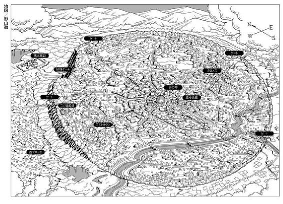
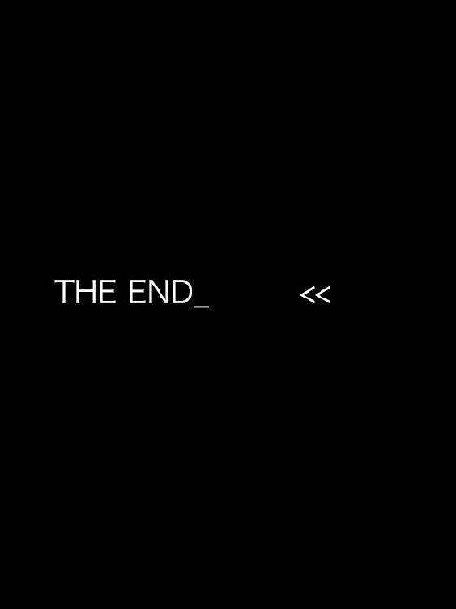

| NO.6 [ナンバーシックス] #09 | |
| あさのあつこ | |
| 講談社 (2014) | |
ＮＯ．６〔ナンバーシックス〕＃９
あさのあつこ

『月の雫』を包囲しろ。
ＮＯ．６を破壊してしまえ。
王さま、
この眼で見たことというのを申しあげねばなりませんが、
どのようにお伝えしたらよろしいのか。
（マクベス 第五幕 第五場 木下順二 訳 講談社 世界文学ライブラリー１）
落ちていく。
ほぼ、真っ直ぐに落ちていく。
それは、紫苑の予想を超える速さだった。
聞こえるはずもない風の音を聞く。
それは、あの嵐の夜の風音だった。
二〇一三年九月七日、紫苑の十二歳の誕生日。聖都市ＮＯ．６は台風に直撃された。
雨が地を叩き、風が唸りをあげる。庭の木々が大きく傾ぎ、葉をつけた小枝がへし折られて空を飛ぶ。近年にない超大型台風ではあったが、当時住んでいた『クロノス』では、誰一人として危険も不安も感じてはいなかったはずだ。紫苑も母の火藍もそうだった。
ここは、ＮＯ．６。人間の叡智と最新の科学技術を結集して創り上げた理想郷だ。しかも、『クロノス』はその理想郷の中でも最高の高級住宅街。選ばれた者たちだけが住める町だ。自然の災害などに揺るぎはしない。
誰もがそう信じていたのだ。疑うことなど、思いもしなかった。疑うことなど、許されなかった。
あの嵐の夜、ぼくは窓を開けた。
何のために、と、ときおり考える。
ぼくは、何のために窓を開けたのだろう。
荒れ狂う自然に興奮し、刺激され、激しい情動に衝き動かされて......だろうか。確かに、ぼくは窓を開け、叫んだ。身の内にある猛々しいものを吐き出すかのように叫んだ。叫ばなければ、ぼく自身が砕け散るような恐れを感じていたのだ。ぼくはぼくなりにＮＯ．６に囲い込まれ、馴らされてしまう恐怖を感じ取っていたのだ。
漠とした恐怖。きみには無縁のものかもしれない。
ぼくは、息苦しかった。怖かった。叫びたかった。
だから、ぼくは窓を開けた......のだろうか。
ちがう。
そうじゃない。
ぼくは、きみに呼ばれた。
きみがぼくを呼ぶ、その声を聞いたのだ。
風音をかいくぐり、雨音を突き破り、きみの声はぼくに届いた。
きみはぼくを呼び、ぼくはきみに呼ばれた。
だから、ぼくは窓を開けたのだ。外へと開け放したのだ。
きみを求めて、両腕を伸ばしたのだ。
嗤うか？ きみは、鮮やかな嘲笑を浮かべ、ぼくを揶揄するだろうか？ 優雅な仕草で、かぶりを振るだろうか？
意味のない妄想だ。まるで似非芸術家の作品のように、鼻持ちならない自意識だけの産物じゃないか。
そう言い捨てるだろうか？
言い捨てるだろうな、たぶん。
嗤えばいい。妄想だと言い捨ててくれてもかまわない。
けれど、真実だ。
きみは呼び、ぼくは聞いた。ぼくは腕を伸ばし、きみはその腕を摑んだ。ぼくはきみと出逢うために、窓を開けたのだ。
それが、ぼくたちの真実だ。ネズミ。
耳元で激しく音が鳴る。
風巻の音ではない。プラスチックの管の中を滑り落ちていく音だ。この管がダストシュートなどではなく、奈落へと続く急坂だったとしたら......。
ふっと意識が遠のく。身体中いたるところに負った傷が熱を持ち、疼く。力が抜けていく。
奈落へ落ちるのも、きみと二人でなら悪くはない。だとしたらもう、抗うことは止めようか。あがくことも、戦うことも、生きたいと望むことも諦めてしまおうか。
このまま意識を失えば、この痛みからも、疲労からも、逃れられる。
紫苑は瞼を閉じた。闇が目の前に広がる。
このまま、このまま......。
「うっ」
ネズミが小さく呻いた。その呻きが紫苑の鼓膜に突き刺さる。夜空に閃く雷光のように、意識の闇を払う。
くそっ。
紫苑は強く唇を嚙んだ。自分で自分に痛みを与える。自分を本気で罵倒する。
馬鹿野郎。何を考えてるんだ。諦めてどうする。生きろ。生き延びろ。ぼくたちには、生きて再び、帰るべき場所があるはずだ。
誓ったのだ。ネズミを守り通すと、ともに生き抜いてみせると自分に誓ったのだ。
手が滑る。ネズミの血が手のひらにこびりついている。ポケットから黒い小ネズミが飛び出した。ダストシュートの壁を走る。落ちていくのではなく、確かに走っていた。
ツキヨ、頼む。イヌカシに伝えてくれ。ぼくたちは生きていると。
紫苑は両脚を壁に押しつけ、歯を食いしばった。全身の力を脚にこめる。ぎしぎしと骨が軋んだ。落下のスピードが緩む。骨は軋み続ける。骨自体が悲鳴をあげているようだ。
ちくしょう、負けてたまるか。
紫苑はさらに強く、唇を嚙んだ。血の味はしない。錆びた鉄のようなこの味に、舌はとっくに麻痺している。
イヌカシ、イヌカシ、助けてくれ。
イヌカシ！
力河が咳き込む。咳き込んだあと、荒い呼吸を繰り返す。
「イヌカシ、もうこれ以上は無理だ。限界だぞ」
「何の限界だ」
「息ができねえだろうが。おれを窒息死させるつもりか」
「おっさんを窒息死させて、おれに何の得がある。たっぷり遺産でも残してくれてるのかよ。もっとも、おっさんの残すものといったら、酒の空き瓶ぐれえのもんだろうがな」
「ふん。おまえたちなんかに空き瓶一本でも、残してやるもんか」
憎まれ口をききながらも、力河は逃げようとしなかった。ダストシュートの口の下にぼろマットを運び、重ねている。一枚重ねては咳き込み、ぜいぜいと喘ぎ、憎まれ口をきいた。
清掃管理室には煙が充満していた。集積場もむろん例外ではない。灰色に濁った濃煙に埋もれようとしている。犬たちは腹這いになり、じっと息を潜めていた。あんなに忙しく鳴き交わしていた小ネズミたちでさえ、身を寄せ合って動かない。
限界、確かに、限界が近づいていた。
イヌカシ自身、煙にむせて息がうまく喉を通らない。心臓が激しく鼓動を刻んでいた。
苦しい。
息がつまる。
けれど、不幸ではなかった。絶望などしていない。むしろ、心の一部が高鳴り、躍っている。
この煙は何だ？ ときおり吹きつけてくるこの熱風は何だ？ うねりとなって伝わってくるざわめきは何だ？
明らかな崩壊の兆しだ。
矯正施設が断末魔の悲鳴をあげている。
イヌカシは興奮のあまり、幾度も吼えそうになった。喉を震わせ、おうおうと狗吠をあげたい。一度、大きく口を開けたが、煙が流れ込んできてむせただけだった。
マットを運びながら、舌で唇を舐める。吼えられないなら、せめて、舌舐めずりぐらいしてやろう。
絶対だと思っていたものが、崩れようとしている。
決して変わらぬと諦めていた運命が、動き始めた。
何てこった。これが、人生ってものなのか、ネズミ、紫苑。だとしたら、おれはおまえたちに生きるってことがどういうものか、教えてもらったわけだ。何が起こるかわからない。人の作り上げたものに絶対的な何かなんて、一つもないんだ。
感謝はしない。おまえたちには、散々振り回されてきたんだからな。お礼なんて、口が裂けても言うもんかよ。
だけど、褒めてはやる。精一杯の称賛を送る。実際、犬に負けないまともな人間だったなと感心してるんだ、おれは。たいしたもんだよ、おまえら。ちょっとだけど、見直したぜ。
煙が目を、喉を、鼻孔を刺激する。涙が一筋、流れた。煙が沁みたのだ。
帰ってこいよ。帰ってこなけりゃ、褒めてやれないじゃないか。早く、早く、おれの息が続いている間に、早く。
イヌカシ！
呼ばれた。振り返る。
力河が床にしゃがみこんでいた。口元を白い布で押さえ、背中を波打たせている。
「呼んだか」
「......何だって......」
「おれを呼んだか、おっさん」
「おまえを呼んで......どうする。末期のキスでもしようってのか......」
「やめてくれ。冗談にしても気持ち悪すぎる」
「おれは......もう、気持ち悪いところなんて、とっくに......通り過ぎてる。ほんとに......もう、だめだ......」
「そりゃあ、気の毒に。ご愁傷さまだな。ただし今さら悪行を悔い改めても遅すぎる。どう取り繕ったって堕落したおっさんなんて、天国にゃ近づけもしねえぞ」
「くそっ......こんなときまで減らず口たたきやがって......」
爆発音。煙が流れる。斑犬が頭を上げる。目の中に怯えが走った。それでも、犬たちは動かない。逃げようとしなかった。
おれの指示を待っているんだ。
死の恐怖と戦いながら、イヌカシの命令を待っている。犬は決して主を見捨てない。裏切らない。
こいつたちを殺しちゃだめだ。
「行け」
イヌカシは出入り口のドアを指差した。
「おまえたちだけでも、逃げるんだ」
しかし、犬は立ち上がろうとしなかった。腹這いになったままイヌカシを見上げている。
「どうした？ 逃げろと言ってるんだ。早く、ここを出ろ」
斑犬と目が合う。静かな目だった。さっき、束の間よぎった怯えの影は、もう完全に拭い去られている。
「そうか......」
主が動かない限り、動かないってわけか。
「......おれには、言わないのか」
げほげほと力河が咳き込んだ。
「おれには逃げろって......言わないのか」
「おっさん？ 逃げたきゃ逃げてくれ。ここにいても、役にゃ立たんだろう」
「イヌカシ」
「何だよ」
「おまえ......死ぬ気か......」
「死ぬ？ おれが？ 何で？」
「あいつら二人が......紫苑とイヴが帰ってくる可能性は、ほとんど......ない。そんな僅かな可能性に賭けるってことは......賭けて、ここに留まるってことは......自殺行為だろうが......」
馬鹿な。天地がひっくり返ったって自殺なんかするかよ。これから、とんでもないほどおもしろい見物ができるかもしれないのに。
矯正施設の崩壊は、序章にすぎない。前触れにすぎない。このあとに来るものは、ＮＯ．６そのものの瓦解だ。
ＮＯ．６が崩れ落ちていく。
おれは、その瞬間を目の当たりにできるんだ。なのに、死ぬ？ 馬鹿言ってんじゃねえよ。生きて必ず、ＮＯ．６の最期を見届けてやる。最高の舞台を思う存分、楽しんでやる。
くっくっく。
軽やかな笑い声が耳元で響いた。いや、耳の中、頭の中だ。
誰かが笑っている。
軽やかな、楽しげな、それでいてひどく冷ややかな笑い声だった。
「誰だ？」
思わず巡らせた視線の先を、小さな黒い影がよぎった。
虫？
その影はすぐに煙に飲み込まれ、消えた。笑い声も消えた。
どちらも幻覚だったのだろうか。こんな煙の中を虫が飛んでいるわけがない。
ぞくり。
背筋に悪寒が走った。
キキキッ、チチッ。
チチチチチッ。チィーッ。
突然、小ネズミたちが騒ぎ始める。さっきよりずっと甲高い鳴き声をあげ、マットの上を走り回り始めた。
イヌカシは息をつめる。
シュートの口から黒い小さな塊が転がり落ちてきた。塵ではない。黒い小さなネズミだ。
「ツキヨ」
名前を呼んでみた。黒い小ネズミが飛んだ。イヌカシめがけて、跳躍する。とっさに差し出した腕に飛びつき、激しく鳴く。
チチチチッ、チチチチッ。
ツキヨだ。間違いない。イヌカシ自身がネズミのもとに行けと命じた、あの小ネズミだ。血が動いた。身体中が熱くなる。
「おっさん、起きろ」
「へ？」
しゃがみこんでいた力河が弱々しく瞬きをした。目が真っ赤だ。顔は煤け、髪は乱れ、一気に十以上老けたようだ。
「あいつらが帰ってくるぞ」
「へ？」
「帰ってくるんだ。マットを押さえろ」
「おっ、おう」
力河が身を起こす。意外なほど俊敏な動作だった。
風が唸っている。
イヌカシと力河がマットを押さえたのとほぼ同時に、どすりと重い衝撃が来た。マットがしなり、イヌカシの華奢な身体ははじきとばされそうになる。全身の力をこめ、マットにしがみついた。
思わず閉じた瞼をそっと持ち上げる。
折り重なった二つの身体が見えた。
「紫苑、イヴ！」
イヌカシより先に、力河が叫んでいた。
「無事か。おい、無事か」
「くっ......」
紫苑の腕がひくりと動く。白い髪の一部が血色に染まっている。肩からも、脚からも血が流れていた。衣服もあちこちが裂け、破れ、垂れ下がっている。あちこちに散ったどす黒い汚れは、血なのかシュート内の塵が付着したのか判別できない。
ひでえ。
イヌカシは目を見開いたまま、煙の臭いのする唾を飲み下した。
ぼろぼろじゃねえか。
墓場から這い出してきた亡者だって、もう少しましな格好をしているだろう。
「......イヌカシ」
紫苑が上半身を起こし、顔をイヌカシに向けた。頰に幾つもの筋ができている。汗なのか涙なのか、くっきりとした跡が刻印されていた。
「紫苑、生きてるんだな」
生きて帰ってきたんだな。
「イヌカシ、ネズミを助けて......」
「ネズミ？ ネズミがどうしたって？ ネズミが」
イヌカシは迫り上がってきた悲鳴を辛うじて抑え込んだ。
マットの上にネズミが横たわっている。僅かも動かない。肩から胸にかけて衣服が赤黒く汚れ、血の臭いが立ちのぼる。
「ネズミ、おい、どうした？」
こわごわ声をかけてみたけれど、返事はなかった。血の気の失せた顔の中で、唇だけが鮮やかに紅い。
人のものとはとうてい思えなかった。もともと人臭さをほとんど感じさせない顔立ちではあったが、これは完全に人形だ。精巧、精緻な作り物だ。
でも、人形は血を流したりしない。
「病院へ、早く」
紫苑が絞り出すように叫んだ。
爆発音が轟く。部屋全体ががたがたと揺れた。どこからか風が吹き込んできたのか、煙が揺らぎ、少し薄れる。揺れは収まらない。
「逃げろ。崩れるぞ」
力河が紫苑の手からネズミをもぎとった。肩に担ぐ。
「紫苑、自分で走れるか」
「はい」
「よし、走れ。外に出るんだ」
さっきよりさらに激しい音が響き、矯正施設に繫がるドアが吹き飛んだ。
「走れ、走れ、これ以上もたない」
ネズミを担ぎ、力河が駆け出す。ツキヨは紫苑のポケットにもぐりこみ、二匹の小ネズミ、ハムレットとクラバットは犬の背に飛び乗った。
「逃げろ、ちくしょう、逃げるんだ」
力河の喚きがぶつかってくる。
背中が熱い。
振り向いたイヌカシの目に炎が映った。吹き飛んだドアの向こう、矯正施設が燃えている。
ドアが吹っ飛んだ？
矯正施設と清掃管理室との間に設置されたドアは特殊合金で、小型ミサイルぐらいでは壊れない......はずじゃなかったのか。それがこんなに簡単にぶっ壊れたってか？
一秒の半分にも満たない時間、啞然とする。
炎が蠢く。火色の魔物がのたくっている。のたくりながら、床に転がっていた黒犬の死体を飲み込んだ。イヌカシを守って撃ち殺された犬だ。土に埋めてやることさえできなかった。
すまん。
「イヌカシ、急げ」
紫苑が腕を摑んでくる。
「逃げろ、逃げろ、逃げるんだ」
力河は喚き続けていた。その喚きをエネルギーに換えて、前に進んでいるみたいだ。煙と熱風に背中を押され、イヌカシは文字どおり外へと転がり出た。新鮮な空気が体内に流れ込んでくる。
あぁ息がつけた。
「まだだ。まだ、だめだ。走れ」
紫苑の指に力がこもる。腕ごと引きずられる。脚の下で礫がジャリジャリと音をたてた。
「痛っ。紫苑、痛えよ。止めて」
イヌカシは口を閉じた。紫苑と目が合ったのだ。
紫がかった黒い眸。以前と同じだ。まったく変わっていない。充血し、瞼は腫れているけれど、紫苑の眸だ。
しかし、イヌカシは口を閉じ、身体を強張らせた。どうしてだかわからない。今、目の前に立ち、「走れ」と命じている少年は、まるで未知の者だった。イヌカシの知らない誰かだった。
ちがう。紫苑の眼じゃねえよ。
紫苑、どうしちまったんだ。
戸惑いと違和感は束の間で消えた。確かにまだ、へたりこむときではない。本能が警告を鳴らす。最新式の警報装置などよりずっと頼りになる生身の感覚だ。
急げ、走れ、逃げろ。
イヌカシは飛び起き、がむしゃらに走った。背後から、怪物の雄叫びが迫ってくる。そうだ、あれはただの爆発音ではない。怪物が吼えている。猛り狂っている。
急げ、走れ、逃げろ。
逃げ延びろ。
ポケットから這い出してきたツキヨが紫苑の首にしがみついている。小さな丸い目を精一杯に見開き、イヌカシを見ていた。
何かかわいいな。
犬の目も小ネズミの目もいっしょだ。穢れてないものは愛らしい。シオンを思い出す。一時も忘れてはいなかった。思い出してはならないから、心の片隅に追いやっていただけだ。
無垢そのものの存在、あんなに幼いのにあんなに豊かだ。
犬たちがうまくやってくれているだろう。何度も仔を産み育ててきた母犬に預けてきた。他にも気立てのいい数匹の女たちが侍っている。優しい乳母に守られて眠っているはずだ。
「シオン、おれの赤ん坊だ」
呟いたとき、先を走っていた力河の姿が消えた。叫びと、人の身体の倒れる音がする。
「うわっ」
横転した力河につまずいて紫苑が転がる。その紫苑にイヌカシは足をすくわれ、したたかに地面に打ちつけられた。痛みが身体の芯まで響いてくる。
声も出せない。地面に腹這いになったまま、荒い息だけを繰り返す。大地の凍てつきが頰に伝わってきた。心地よい。真冬の凍てつきではなく、微かな温みと柔らかさを内包した凍えだ。
春が来る。
西ブロックにも遅い春が訪れようとしている。
ＮＯ．６には花の咲き乱れる公園も桜の並木道も整備されているのだろうが、西ブロックでは花をつける木々などほとんどお目にかかれない。それでも、路傍の雑草は、毎年律儀に花弁を開く。食用にならない花に興味も関心も起きないが、ふいっと心を動かされはする。
あぁこの冬もまた生き延びることができた。そう思えた。思った刹那、脳裡にはその冬、凍えて死んだ者たち──親しかった物乞いの老婆、廃墟にしばらく居ついていた男、瘦せ細って年齢も定かでなかった女──の顔が浮かび、また刹那に消えていった。
春が来る。
今年も路傍に、花は咲くだろうか。
「ネズミ」
紫苑が呻いた。起き上がり、這うようにしてネズミに近づく。
「ネズミ、ネズミ、聞こえるか、ネズミ」
イヌカシも身を起こす。灌木の茂みの陰だった。ここに潜んで、月薬が射殺されるのを目撃したのはいつだっただろう。
つい数分前のことにも、千年の昔の出来事にも感じられる。
「ネズミ、目を開けろ。出たぞ。脱け出たぞ」
紫苑の声は廃墟に吹く風に似ていた。
物悲しい。聞く者の耳と心を凍てつかせる。
紫苑の肩越しにネズミの顔を覗き込み、イヌカシは唇を固く引き結んだ。
死んじまったのか。
唇を押し上げて、その一言が零れそうになる。
紫苑、ネズミは死んじまったのかよ。それとも、これも芝居か。こいつは、何の役を演じてんだ。マクベスとかハムレットとか、おまえらが口にしていたわけのわからねえ名前の役なのか。
なあ、紫苑。まさか本当にネズミは......。
「くっ」
ネズミの睫毛が僅かに震えた。
「生きてる」
紫苑がネズミを抱きかかえ、叫ぶ。
「ちゃんと生きてるんだ。早く、病院へ」
そうさ、生きてるとも。騙されねえぞ、ネズミ。おまえがそう簡単にくたばるわけがねえんだ。
「おっさん」
イヌカシはしゃがみこんでいる力河に声をかけた。茂みの先に、力河の車が止まっている。廃車寸前のどうしようもないポンコツだが、人を乗せて走ることはできる。実際、そのガソリン車に乗ってここまで来た。
「おっさん、急げ」
「......わかってる。けど」
力河が口元を押さえ、茂みに頭をつっこむ。すぐに嘔吐の音が響いてきた。
「あほっ。ゲロなんて吐いてる場合かよ。急げよ、ほら」
ズボンのベルトを持って、茂みから引きずり出す。それが合図だったかのように、矯正施設の窓から一際大きく炎が噴き出した。あたりが明るく照らされる。黒煙が太い流れとなって、空へと昇っていく。星々の煌めきを覆いつくす。
この炎はＮＯ．６からも目にできるのか。西ブロックの住人たちは夜を焦がす炎をどんな思いで眺めているのか。
見ろよ、崩れるぜ。
おれたちにとって地獄に等しい場所が崩れ落ちようとしている。おれたちのバザールよりもあっけなく、消え去るんだ。
力河がよろよろと立ち上がった。手の甲で口元を拭い、ついでに額の汗を拭う。
「なんでおれが......こんな目に遭わなくちゃならねえんだ。まったく、だいたいおれはな......」
「ぶつくさ言うな。どうせ、誰も聞いちゃいねえよ。文句垂れる前に、とっとと車を動かせって」
「動かしてどこに行くんだ」
力河が怒鳴った。
「え？ 答えてみろ、イヌカシ。瀕死の怪我人をどこに運べばいいんだ。答えろ、答えろ、答えてみろ。おまえが答えられるんなら、どこにだって連れていってやる」
イヌカシは顎をひき、黙り込んだ。
答えられない。
力河の剣幕に気圧されたからではなく、本当に思いつかなかったのだ。「病院へ──」。紫苑はそう言ったけれど、西ブロックに医療施設は一つもない。怪しげな呪い師や胡散臭い薬屋の類はあるにはあったが、『人狩り』のとき、店ごときれいに吹き飛ばされた。吹き飛ばされていなくても、何の役にも立たないが。
「これだけ出血したやつを運び込むなら、ある程度の医療設備が必要だ。そんなもの、どこでお目にかかれるんだ。どこにもないだろうが。西ブロックじゅう探したって、注射器一本見つかるもんか。そんなことは、イヌカシ、おまえが一番よく知ってるはずだ」
力河がまくしたてる。イヌカシは、ネズミを見下ろした。唇が僅かに開いている。息をしている。でも......。
ここまでか。
脚の力が萎えて、くずおれそうになる。
ここまでだ、ネズミ。おれたちにはこれ以上、何もできない。
「ある」
紫苑が立ち上がった。
「病院ならある」
イヌカシと力河は顔を見合わせた。互いの目を覗き込む。
「病院って......どこにだ」
ひどくしゃがれた声音で力河が尋ねた。紫苑の視線が横に流れる。その先に、炎が明々と照らし出す特殊合金の壁があった。
「あの中だ」
「ＮＯ．６！」
イヌカシと力河の声が重なる。
「ええ。あの中なら病院は幾らでもある」
「馬鹿な。どうやって中に入る。おれの車じゃゲートを通り抜けるのは不可能だ。通り抜けるどころか、数メートル前で不審物として爆破されちまう。無理だ。とうてい、無理だ。そうだ！ なぁ、紫苑。おまえはどうやって、ＮＯ．６から抜け出してきた？ そのコースを逆に辿れないのか」
なるほどと、イヌカシは相槌を打ちそうになる。
出てこられたのなら、入れるかもしれない。このおっさん、アルコールが抜けちまうと、わりに頭の回転、速ぇ。
しかし、紫苑ははっきりとかぶりを振った。
「それはできません。時間がかかりすぎます。それに、ネズミの体力がもたない。あと......一時間、一時間以内に病院に運ばなければ......」
「しかし、ゲートをどうやって突破する」
「突破する必要はないと思います」
「何だと？」
「矯正施設は崩壊した。全ての機能が停止している状態です。だとしたら、ゲートだって作動していない可能性は大いにある」
「矯正施設用の専用ゲートを使って、ＮＯ．６内に入るつもりか」
「そうです」
「紫苑、おまえ......矯正施設のゲートがどこにあるか知ってて言ってるのか」
「はっきりとは知りません。矯正施設に直結しているとは、聞いたことがある」
力河の喉仏が動いた。唾を飲み込んだのだ。イヌカシも同じことをしていた。煙に燻された喉の奥が痛い。
「そうだよ」
力河の声がさらにしゃがれていく。
「そのとおりだ。ほぼ、直結している。ゲートをくぐって百メートルほど先に矯正施設の裏門がある。『人狩り』のさい、おまえたちが運び込まれたところだ。トラックの荷台に詰め込まれてちゃ、何も見えなかったろうがな」
紫苑と力河のやりとりを聞きながら、イヌカシは知らぬ間にこぶしを握っていた。
月薬もその門、そのゲートから出入りしていた。「おれは囚人たちと同じ扱いをされてるんだ」と嘆いていたのを、何度も聞いた。
「囚人はとっ捕まったら殺されるだけだ。ゲートをくぐることは二度とない。けど、あんたは毎日、行き来してんだろう。しかも、賃金までもらっている。囚人とは明らかにちがうじゃないか」
愛想半分で答えた。
「まぁな。言われてみりゃあ、囚人といっしょじゃ、家に帰れなくなるな」
月薬は肩をすくめ、苦笑いを浮かべた。
けど、結局は同じだった。囚人、いや、虫けら同然に撃ち殺されちまった。
月薬の苦笑した顔が浮かんでくる。イヌカシはさらに強く、指を握り込んだ。
「では、ここからゲートまでは車で行けますね」
「障害物がないって意味なら、行けるさ。矯正施設に近づこうなんて頭のいかれたやつは、西ブロックには一人もいないからな。おまえたちをのぞいてだが」
「力河さん、車のキーを貸してください」
紫苑が傷だらけの、血に塗れた手を差し出す。力河の眉がそれとわかるほど、しかめられた。眉間に深い皺が寄る。
「どうするつもりだ」
「ぼくが運転する。二人は残ってください。キーを早く」
「ふざけんな」
力河がまた、怒声をあげた。
「おまえの目ん玉は腐ってんのか。あの炎が見えてないのか。馬鹿野郎が」
矯正施設は黒煙と炎をあげながら、かろうじて建っている。あれほど鳴り響いていた警報はいつのまにか途切れ、炎が呼び込む風の音だけがすさまじい。
「やっとこさ逃げてきた矯正施設に、また舞い戻ろうっていうのか。ふざけんな。おまえ、生命を幾つ持ってるつもりなんだ」
「中に入るわけじゃない。ゲートは外にある」
「百メートルだぞ。たった百メートルしか離れてないんだ。ゲートだけ無事であるわけねえだろうが」
「だから行くんだ。通常では通れないゲートも、今ならただの出入り口にすぎない」
「ガソリン車だぞ、炎の中につっこんで引火でもしたら」
「渡せ」
力河の喚きを遮り、紫苑が低く命じた。
命じた。確かに、命令の一言だった。一喝したわけでも、激しく叫んだわけでもない。むしろ、静かな重い一声だった。
力河が半歩、後ずさりした。
「キーを渡すんだ」
紛れもない支配者の下知。
力河の手がポケットをまさぐり、古びた銀色のキーホルダーを取り出す。指先が震えていた。
「......止めろ」
紫苑よりさらに低い声がする。地の底から湧いてくるようにも思えた。イヌカシの背筋に悪寒が走る。
ネズミがゆっくりと身を起こしたのだ。
「もういい。止めろ」
はっきりと聞き取れた。
ネズミの声だ。ネズミは十色も二十色も声を使い分けるけれど、今、自分の耳が捉えたものは間違いなくネズミの素の声だった。
「もう......近づくな、紫苑」
紫苑は答えなかった。ネズミを見ようともしなかった。力河に向け、頭を下げる。
「力河さん、お願いです。キーをください。頼みます」
命令ではなく、懇願する。
イヌカシの知っている紫苑だった。聡明で、優しく、一途で天然でドジな紫苑だ。
「渡してやれよ、おっさん」
イヌカシは深く、ため息をついていた。どうして、ため息なんかついたのかわからない。わからないことだらけだ。自分のことさえ、摑めなくなった。
「紫苑、おれもいっしょに行くぜ」
ため息とともに言葉が零れた。
驚いてしまう。
ほら、これだ。おれは、こんなに生命が惜しいのに、生き延びたいと必死なのに「いっしょに行くぜ」だってよ。信じられねえよ、まったく。しかも、これが噓でも強がりでもなくて、本心なんだ。おれは本心から、「いっしょに行くぜ」って言ったんだ。どうなってんだ、まったく。おれには、おれが理解できねえ。どうなってんだ、どうなってんだ、どうなってんだよ。ちくしょう。
「わかったよ」
力河が舌打ちする。
「おまえらがそうしたいなら、好きにしろ。どうせ、年配者の言うことを素直に聞くようなタマじゃないんだ」
「おれと天然ぼっちゃんをいっしょくたにするなよ。まっいいや。て、ことで二対一で、ＮＯ．６へのドライブが決まったぜ。残念だったなネズミ」
「三対一だ」
力河がキーを握り込む。
「おれもドライブに参加するさ」
イヌカシは瞬きし、力河を見やった。
煤と土と血に汚れた男の目も、瞬きを繰り返す。
どうなってんだ、おれは。何で、こんなこと言っちまったんだ。しかも本心から。
そういう顔だった。
イヌカシは泣きたいようにも、笑いだしたいようにも感じる。
何ともへんてこな気分じゃないか。
怖いのに爽快で、絶望的なのに晴れやかだ。
へんだね、心ってものは。
「おれの大事な車だからな。乗り捨てにされちゃたまらん。それに、おまえらみたいな小僧っ子に運転なんかできるわけないんだ。まったく、近頃の若造ときたら、ろくなこともできないのに、口ばっかり達者になりやがって」
力河がぶつぶつと文句を連ねる。何かしゃべっていないと、ため息をつくからだろう。
力河の車は小型のライトバンだった。あちこちがへこみ、右のサイドミラーがへし折れている。旧式のガソリン車で、ＮＯ．６なら博物館に陳列されていてもおかしくない代物だ。
ただ、頑丈ではあった。エンジンの出力も見た目よりずっと大きい。西ブロックで車を乗り回せるのは、ある程度の金を持っている証でもある。乗車中に物盗りに襲撃される危険性は、少なからずあった。そのために、装甲車並みの頑丈さに改良してあるのだと、力河の自慢話を聞いた覚えがある。
イヌカシは助手席に、紫苑はネズミを抱いて後部座席に座った。最後に犬たちが乗り込んでくる。
「何で、犬まで乗せるんだ。獣臭くなるだろうが」
「酒臭いより、ずっとマシだね。おれの犬はボスには忠実なんだ。おれの行く所にはどこだってついてくるさ。このちっこいネズミたちがボスに忠実なようにな」
小ネズミたちは座席の上で身を寄せ合っていた。鳴くことを忘れてしまったかのように黙りこくっている。
「犬に小ネズミか、行き先は動物園に決まりだな。ふん、さぞや楽しいドライブになるだろうよ」
力河がキーを回す。ブルッブルッとエンジンが滑稽な音をたて、車体が震えた。
「行くぞ。全速力で突っ走るからな。覚悟しとけよ」
車が急発進した。そのまま、加速しながら真っ直ぐに矯正施設につっこんでいく。
「おいおい、おっさん、自棄になってないか」
「自棄にならなきゃ、こんなことできるかい。ちくしょう。何だってんだ。何でこんなこと、やってるんだ、おれは」
「イヴに惚れてるからだろ」
「何だと？」
矯正施設の裏門は大きく開け放たれていた。ここから逃げ去った者がいるのだろうか。常に固く閉じられ、何人をも近づけなかった門が、無防備に開いている。その後ろでは炎が渦巻き、建物が崩落の音を奏でる。幻影としか思えない風景だ。
これは本当に現実なのか？
矯正施設の門扉が開き、特殊合金のドアが吹っ飛んだ。
起こるはずのないことが、起きる。起こるはずがないと信じていた、いや、信じ込まされていたことが、ひっくり返る。善も悪もない。正義も不正義もない。
これが現実だ。
車は裏門すれすれで曲がると、さらに加速した。行く手にゲートが見えた。
「何だって、今、何て言ったイヌカシ」
「おっさん、イヴに夢中になってたじゃないか。本当は今でも、熱烈なファンなんだろう。ぞっこんまいっちまってる。でなきゃ、担いで全力疾走はできねえもんな。生命がけのファインプレーだったね、おみごとなもんさ」
「ふざけんな。医療施設に着いたら、まずはおまえのその口を縫いつけてやる。腐った舌ともどもな」
「そりゃあ、すてきだ。ＮＯ．６の医療施設で治療してもらえるなんて、光栄の極みだね」
「勝手にほざいてろ！」
力河がハンドルを握りしめた。
イヌカシは目を見開き、身を縮める。ゲートが猛スピードで近づいてくる。いや、こちらが近づいているのだ。
「燃えてる」
呟いていた。
声には出すまいと決意していたのに、目に映ったものを決して言葉にはすまいと抑えていたのに、つい......。
ゲートは燃えていた。
炎に包まれている。矯正施設ほどではないが、小さな爆発音が響いてくる。ガラスや金属の欠片が容赦なく車体にぶつかってきた。そのたびに車はぼこぼこと不気味な音をたてる。悲鳴そのものだ。
痛い、怖い、死んじまう。
「燃えてる」
一度口にすると、恐怖が全身を締めつけてくる。髪の根元が逆立つみたいだ。しかし、押し寄せる恐怖をかいくぐり、疑問が一つ、イヌカシに纏わりついて離れない。
どうしてここまで、あっけなく崩れちまうんだ。
紫苑とネズミが矯正施設の中枢を完璧に破壊したのはわかる。たいしたもんだと感嘆もする。
けれど、おかしい。あまりにも、あっけなさすぎる。こんなに脆いものなのか。こんなに他愛なく崩壊していくものなのか。ＮＯ．６が絶対的な存在だとも、全能の支配者だとも、今はもう僅かも思わない。あの特殊合金のドアと同じだ。折れ曲がり、砕け、無残な姿で転がる。
でも、でも、それでもＮＯ．６だぜ。人間の叡智と科学技術の粋を集めた人工都市だろう。矯正施設はその都市の暗部を支えていたもう一つのＮＯ．６だ。いやＮＯ．６の落とし子、親と瓜二つの邪悪な子どもだ。
邪悪なものは邪悪な力を持つ。
もう少し何とか踏み止まれなかったのか。
こんなに為す術もなく、やられちまうのか。
くっくっく。
また、聞こえた。
あの軽やかな、けれど恐ろしい笑い声だ。
目前の炎より、ずっと恐ろしい。
イヌカシは悲鳴をあげた。ほとんど同時に力河も大声で喚く。こちらは鍔際の恐怖のためだ。
「うわあぁぁぁぁっ」
炎の壁につっこんでいく。
犬たちが激しく吼え続ける。
イヌカシは目を閉じなかった。開いたまま、自分たちを飲み込む炎を見る。一色ではない。夕日の朱が、血の紅が、花の赤が混ざっている。金色に光り、赤黒く沈み込む。フロントガラスの一部が砕けた。熱風がまともに吹きつけてきた。髪の焦げる臭いがする。熱にあらゆる水分が蒸発し、しわしわと萎んでいく。
あっ、ここで死ぬのか。
何だ、と思う。
何だ結局、こいつらと死ぬのか。結局......。
「エリウリアス」
後部座席で声がした。紫苑の声なのかネズミのものなのか、わからない。意味もわからない。呪いだろうか。最期の一声にしては奇妙だ。もっとも、根っから奇妙で、へんてこで、とんでもないやつらだ。今さら、驚きゃしないけど......ちょっとひっかかる。
エリウリアス？ 何だ、そりゃあ。
髪が焦げる。皮膚が炙られる。熱い。
ちくしょう、熱い。
炎が揺らいだ。揺らぎながら、ほんの少し遠ざかる。ほんの少し熱さが薄まり、ほんの少し息ができた。
え？ 何で？
イヌカシは瞬きした。
炎が自らの意思で後ずさりしている？
まさか、ありえない。いくら何でも、ありえない。
「抜けた！」
力河が大笑する。狂ったように笑い続ける。
「出たぞ。どうだ、ちくしょうめ。無事に通り抜けたぞ。あは、あは、あははははは。どうだ。やったぞ。あははははは」
ひきつれた笑いが車内にこだまする。
あはははは、あははははは、あははははは。
抜けた。確かに、抜けた。
周りは草木も疎らな荒れ地のようだった。西ブロックとそう変わらない風景に見えた。もっとも、その荒れ地には二車線の真っ直ぐな車道がついている。車道の先には緑の豊かな森が広がっているのだろう。闇の中では黒い塊としてしか認識できないけれど、イヌカシの嗅覚は木々の濃厚な匂いを嗅ぎ当てていた。
整備された車道も豊かな森も、西ブロックでは決してお目にかかれないものだ。
ＮＯ．６の内部に入った。
生まれて初めて、踏み込んだ。
「どうだ、たいしたもんだろうが。あはははは。さすが力河さまだ。たいしたヒーローだ。あははははは、やったぞ、ざまあみろ。力河さま、ばんばんざーい。あははははは」
力河の笑い声がさらにひきつれ、甲高くなる。イヌカシは足元に転がっていた酒瓶で力河の頭部を小突いた。
「痛っ。何をしやがる」
「手加減してやった。べつに頭が割れちゃいねえだろう」
「馬鹿野郎。ヒーローに向かって、何てことしやがるんだ」
「ヒステリーの発作を静めてやったんだよ。まったく、みっともねえ、おっさんだ。おれの犬や小ネズミのほうがよっぽど落ち着いてるじゃねえかよ。おっさんのどこがヒーローだ。自棄っぱちになって火の中に飛び込んだだけじゃねえか。あぁ恥ずかしい。恥ずかしい」
「うるせえ。犬や鼠に車の運転ができるのか。やれるものなら、やってみろ。好き勝手なこと、ほざきやがって」
怒鳴るだけ怒鳴ると、力河は大きく息を吐いた。
「紫苑。ここから、どうすればいいんだ。おれには、ＮＯ．６の内側なんてさっぱりだぜ。なんてたって、もう何十年もごぶさたしてたんだからな」
紫苑の身じろぎする気配が伝わってきた。
「ここはロストタウンの手前です。あの森の向こうにＮＯ．６の下町があり、さらに向こうには中央部の町々が広がっています。森は市民から壁を隠す役割を担っているんです」
「なるほど。自分たちが壁に囲まれていることを自覚しなくても、生きていけるわけか」
「ええ」
「医療施設は？ どこに行けばいい？」
「森を真っ直ぐに抜けてください。三叉路があります。そこを右に曲がれば、小さな医院があったはずだ」
「そこでだいじょうぶか？ イヴのやつ、そうとうな深手なんだろう」
「ライフル銃の弾が貫通しています」
「それなら、かなりの医療施設でないと治療は難しいんじゃないのか」
「そうかもしれません。けど、その医院が一番近い医療施設なんです。外科もある。設備の調った施設は中央部にしかないんです。そこまで行く時間はないし、この車だと検問にひっかかる可能性があります。中央部に近づくにつれて、検問は強化されているんです。それに、ほとんどの医療機関は、市民としてのＩＤカードがなければ中には入れない」
「おまえは持っていないんだな」
「捨てました」
一呼吸分、間をおき、紫苑が続けた。
「持っていても役に立たないカードです。ロストタウンの住人では中央の施設のほとんどに入れない」
「入れない？」
「ええ。ＩＤカードの種類によって、つまり市民の立場によって使える施設も住む場所も乗り物も全て異なります。医療だけでなく、日々の買い物も娯楽も、中央の施設には、ロストタウンの住人は入れない。最高設備の場所となると、入ることのできる者はさらに限られてくるんです」
「そこまで徹底しているのか。おれも、むろん耳にはしていた。ＮＯ．６の高官を相手に商売してたんだからな。都市の内部にわけのわからない不安や不満が巣食っているのも、ヒエラルキーができていることも、感じてはいた。けれど、そんな前近代的なシステムが徹底されているなんて......おれの想像を超えていたな。驚きだ」
「高官はヒエラルキーの頂点近くにいるエリートです。底辺からの風景は見えない」
イヌカシは洟をすすりあげた。
力河の言うとおりだ。驚いてしまう。というか、呆れかえってしまう。呆れて唸るぐらいしかできない。
ＮＯ．６という都市は外と内とを壁により隔てただけでなく、その内部においても細かな差異を作り上げ、人を選別してきたのか。
富んだ者と貧しい者、持てる者と持たざる者、優秀な者と劣等の者、強い者と弱い者、本来、人と人の間にあるべくもない線をさまざまに引き、選り分けていく。
そんなシステムが何のために必要だったんだ。誰のために必要だったんだ。
運が悪ければ死ぬ。よければ生き残る。
運がいいのか悪いのか。西ブロックにある線は、ただ一本だけだった。
「これから行こうとしている病院は、そのＩＤカードとやらは必要ないのか」
「必要です。ＮＯ．６の内でＩＤの必要ない場所など存在しません」
「それなら......」
「その医院の医師は、母の店の客だったんです」
「火藍の？ 店って......パン屋だったな」
「ええ。一週間に一、二度、昼食に食べるパンを買いにきてくれていました」
「何て名前だ」
「それは......わかりません。ぼくらは、〝先生〟と呼んでいた。それで十分に通用したんです」
「名前も知らないってか。おい、その先生、あてになるのか。ＩＤカードを携えていない者、ＮＯ．６の住人ではない者を受け入れて治療してくれるほど、博愛主義者なのか」
「わかりません。けれど、その人に縋るしかない」
力河が黙り込む。
選択の余地はない。
迷う暇も、躊躇う時間もなかった。
森に近づくにつれ、豊饒な緑と土の匂いが強くなる。この森に阻まれて、燃え上がる矯正施設もＮＯ．６からは見えないのだろうか。
落ち着いているな。
紫苑のことを思う。
紫苑の物言いは落ち着いて、乱れるところはなかった。いつもの紫苑......ではない。いつもの紫苑なら、もっと揺れ惑い、必死に己の心と戦っているはずだ。
全ての感情を押し込めて冷静に振る舞う。そんな術をいつのまに身につけた？ 水をくぐった布が徐々に色褪せていくのに似て、紫苑のどこかが変質したのだろうか？
イヌカシは自分の手の甲を舐めた。火膨れができている。
振り向くのが怖かった。振り向いて目を凝らしたら、血だらけのネズミと捉えどころのない紫苑がいる。妄想だとわかっているのに、怖い。首の後ろが強張りすぎて痙攣しそうだ。
変わるもんか。
火膨れを舐めながら、胸の内で繰り返す。
紫苑は紫苑さ。変わるもんか。おれがおれであるように、おれが決して変わらないように、変わるわけがない。
車が森の中に入っていく。
「あっ」
紫苑が小さく叫んだ。
「空が......燃えている」
力河も不鮮明な叫びをあげ、身を乗り出す。車が蛇行し、木々の間に設置されている街灯にぶつかりそうになった。
空が燃えている。
夜がさらに深まった空が炎の色に染まっている。矯正施設だけではなかった。ＮＯ．６が火を噴いているのだ。市内のあちこちが炎に包まれている。
何事だ？
イヌカシは口を半ば開けたまま、振り向く。
「おい、何が起こったんだよ」
紫苑が凍てついたように座っていた。ネズミを抱きかかえ、瞬きもせず座っていた。唇だけが微かに動く。
「......燃えている」
遠くで何かが爆発する音がした。
前ではない、後ろ。さっき脱出してきた方向だ。
「ゲートが」
イヌカシはそこで絶句した。言葉が出てこない。口を閉じ、目を瞠る。
これから何が起こるんだ。
興奮でも期待でもない。恐怖でも戸惑いでもなかった。どのようにも言い難い感情に翻弄される。
紫苑が言った。
「まもなく、森を抜ける。ロストタウンだ」
臆病者は、死ぬまでに何度でも死ぬ思いをする。
だが勇者は、死を味わうのは一度きりだ。世に不可思議なことはさまざま耳にしてきたが、何より不可解なのは死を恐れるということ。死を免れることは誰にもできぬ。来る時には必ず来る。それだけのことだ。
（ジュリアス・シーザー 第二幕 第二場 安西徹雄 訳 光文社古典新訳文庫）
通りは人で溢れていた。
幾百、幾千の人々が同じ方向に走っていく。まるで大河の流れだ。いや、大河なら緩やかにうねっていくだろう。こんなふうに、殺気だってはいない。滾ってはいない。
火藍は壁に背を押しつけて、人々を眺めていた。通りに沿って並ぶ小体の家々は、どこもぴたりとドアを閉じ、明かりを消している。
住人たちは家の中で息を潜めているのだろうか。それとも、この流れのどこかに加わっているのだろうか。
背中に人の気配の絶えた家の、冷たい感触が伝わってくる。
「行くぞ、『月の雫』だ」
「おれたちにも生きる権利はあるんだ」
「市長を出せ。どうして、市民に銃を向ける」
「許せん」
火藍が聞き取れたのは、それぐらいのものだった。あとは怒声となり、喚きとなり、呼応の声となり、混ざり合い、ねじれ合い、絡まり合って鳴り渡る音でしかなかった。
その音のエネルギーはすさまじく、身体が浮き上がるような感覚に襲われる。火藍は足を踏んばり、背中をさらに強く押しつけた。そうしないと、流れに、渦に、巻き込まれてしまう。身体も心も持っていかれる。
「うわぁっ」
一際高い悲鳴が、突然、聞こえた。突然に、だ。ごうごうと鳴る音を突き破って鼓膜に突き刺さってきた。
火藍の斜め前で、小太りの男が首筋を押さえ、横転した。一瞬、人々の鳴りが止んだ。静寂が辺りを支配する。
「たっ、助けて......助けてくれ、誰か......助けて」
男は立ち上がり、数歩、よろめいて、また倒れ込んだ。その髪がみるみる白くなり、身体中が萎んでいく。男はもう、動かなかった。
「まただ、また、犠牲者が出た」
「今度は、おれたちの番だ」
「何とかしろ。早く、何とかしろ」
どよめきが空気を揺るがし、人々がまた流れ始める。倒れ、息絶えた男を誰も抱え上げ、流れの外に運ぼうとはしなかった。またぎ越し、踏みつけ、避け、前へ前へと進んでいく。
まだ春の浅い、寒々とした夜なのに、誰もが汗の粒を浮かべていた。
火藍も頰を伝う汗を感じる。喉が渇いてたまらない。貧血を起こしかけているのか、手足の感覚が鈍くなり、意識が薄れそうになる。強く、唇を嚙む。
帰らなきゃ。莉莉たちが待ってる。
壁に背をつけたまま、自分の店へと進む。人々の流れを遡る。
店は真っ暗だった。路地に入り、裏手に回る。ぼんやりとだが明かりが点いていた。倉庫兼紫苑の寝室だった部屋だ。紫苑がいつ帰ってきてもいいように、毎日、掃除だけは欠かさない。
その部屋に明かりが灯っている。
ほうっ。自分でも驚くほどの長い吐息をついていた。吐息が聞こえたわけではないだろうが、倉庫のドアが僅かに開いた。小さな白い顔がのぞき、用心深くあたりを見回す。
「莉莉」
「おばちゃん！」
莉莉が走り寄ってきた。
「おばちゃん、よかった。あたし、あたしね、おばちゃんが外にいる気がしたの。ちゃんと、わかったんだよ」
莉莉の身体を抱きしめる。幼い者の柔らかさと温かさに涙ぐみそうになった。
「紅科のおばちゃん、だいじょうぶだった？」
「ええ......」
「泣いてた？」
「ええ」
息子を撃ち殺された母を家まで送ってきた。息子の遺体の傍らで、紅科は虚ろな眼差しで座り込んだままだった。泣くことさえ忘れたかのようだった。
どんな慰めの言葉も無意味だった。
もし、紫苑が同じ目に遭ったとしたら......。
考えただけで胸が締めつけられる。紅科の絶望が生々しく伝わってくる。だからこそ、かける言葉が見つからなかった。
「紅科おばちゃんて、大きな声で笑うんだよ。すごくよく笑うの」
「ええ」
「また、笑ってくれるかな。笑えるかなあ」
莉莉の顔が曇る。火藍は答えられない。最愛の者を失った絶望から、人はどうやって立ち上がるのだろう。
そっと胸ポケットを押さえてみる。
三通の手紙が入っている。紫苑と、ネズミという少年から届いた、手紙と呼ぶにはあまりに短い、走り書きではあったが。
母さんごめん。ちゃんと生きてる
紫苑は無事。安心されたし。西ブロックに脱出。当局の監視網に注意。返信はこのネズミに。無事であれば茶褐色、変事があれば黒が連絡に現れる。ネズミ
再会を必ず。 ネズミ
この手紙たちにどれほど支えられてきたか。支えられ、生きてきた。
紅科は何を支えに生き延びていくのだろうか。
わからない。
莉莉の問いに答えることができない。
「おばちゃん？」
莉莉が見上げてくる。火藍は頷き、曖昧に微笑む。
ごめんね、莉莉。おばちゃん、莉莉の何倍もの時間を生きているのに、何も答えられなくて。
部屋の中で微かな物音がした。
「莉莉、恋香は？ ママは？」
「ママ、パソコン、見てるよ。おじちゃんがいるの」
「楊眠が？」
莉莉と手を繫ぎ、中に入る。ドアを閉め、鍵をかける。
部屋は倉庫を兼ねているので小麦や砂糖やレーズンの袋が積まれ、蜂蜜やジャムの瓶が並んでいる。
奥まった一隅に紫苑のベッドがあり、その傍らに古い机がおいてあった。紫苑の机だ。引き出しには、紫苑が提出する予定になっていたレポートが中途のまま、しまわれている。
恋香は机に屈み込み、旧式のパソコン画面に見入っていた。
「恋香」
声をかけると、小さく身を震わし振り返った。淡い照明の下で、血の気のない顔が浮かび上がる。
「火藍......」
「恋香、どうしたの。何かあった」
「火藍、兄さんが」
恋香がぎこちなく立ち上がる。
「見て」
パソコンの画面を指差す。
楊眠が映っていた。こぶしを握り、掲げ、ひどく険しい表情をしている。確かに楊眠なのに、まるで別人としか思えない。
「今こそ、立ち上がろう。今、立ち上がり、全てを壊さなければ、我々は一生、奴隷のままだ。そうだ、奴隷だ。諸君はもう、気がついているだろう。この都市、ＮＯ．６がどれほど欺瞞に満ちていたか。我々がどれほど理不尽に虐げられ、搾取されてきたか。昔からそうだった。昔からそうだったのだ、諸君。この都市の歴史はおぞましいほど血塗られている。当局に異議申し立てをしたために、反対したために、抗ったために闇に葬られた幾百の生命があったことを、諸君たちに告げよう。全てを明るみに出そう。諸君、これを見ろ」
楊眠が後ろの壁に向かって、手を振った。
そこに、さまざまな顔が映し出される。
若者、老人、少年、少女、赤ん坊もいる。花嫁姿の娘、逞しい身体つきの労働者、思慮深げな老紳士、微笑む老女、眠っている赤ん坊、笑いながら走ってくる女の子、目を伏せた中年の女性、聴診器をさげた若い医師......たくさんのたくさんの顔が並ぶ。
火藍の心臓が大きく鼓動を打った。
どくっ、どくっ、どくっ。
紫苑がいた。
正面を向いて、少しはにかんだ笑みを浮かべている。ロストタウンに引っ越して初めての誕生日、火藍が撮ったものだ。「いいよ、今さら写真なんて」「いいじゃない、記念なんだから」「外で撮るなんて、いやだからな」「あら、案外、恥ずかしがりやだったのね」そんな会話を交わしながら写した。
「きみの息子さんがどんな少年なのか知りたい。どんな顔なのか、教えてくれないか」
楊眠に頼まれ、見せた写真の一枚だ。いつのまにデータを移されていたのだろう。
「この人たちを見ろ。治安局員に連れ去られ、二度と帰ってこなかった者たちだ。ＮＯ．６に殺された人々だ。諸君の知らないうちに、当局は自分たちに不都合な者を、次々、抹殺していたのだ。知らなかっただろう。そうだ、諸君は何も知らなかった。けれど、それを責めてはいない。諸君はすでに知ったのだ。ＮＯ．６の正体を知った。市当局の、市長の正体を知った。これからどうするか、それこそが問われるのだ。正に、これからなのだ。
諸君、わたしは過去の話をしているわけではない。現在の話をしているのだ。今、こうしているときも、市民が死んでいる。恐ろしい死に方をしている。恐ろしい疾病が都市内に蔓延しようとしている。すでにたくさんの市民が、善良で罪のない市民が犠牲になった。それなのに市当局は何も手立てを講じないのだ。自分たちだけ、有効なワクチンを打ち、のうのうとしているのだ。
諸君、諸君は知っているか。『月の雫』にはまだかなりのワクチンが温存されているのだ。しかし、当局はそれをひた隠しに隠している。我々、市民のために使おうとしない。開発に莫大な経費がかかったワクチンを、おいそれと使うわけにはいかないということだ。そんな馬鹿な話があるか。
諸君、さらに驚くべき事実を公表しよう。これは、わたしが長年、密かに調査し続けてきた事実だ。これこそが真実だ。恐るべき現実だ。市長をはじめ、ＮＯ．６のトップは何年も前から今の事態を予測していたのだ。ＮＯ．６内で未知の病が流行すると。だからこそ、密かにワクチンの開発を進めていた。我々の知らないところで、だ。そして、いざとなると限られた者しか救おうとしない。しかも、見ろ。もっと目を見開いて、見ろ。この有り様を」
白い壁に、今度は群衆が映し出される。『月の雫』に押しかけた人々だ。強張った表情で何かを叫んでいる。画面の隅で赤い閃光が走る。誰もが一様に恐怖の表情となり、我先に逃げ出した。次に銃を構えた兵士と広場に倒れた血だらけの人々の姿が映った。小型カメラによる隠し撮りらしく、映像は不鮮明で斜めや横に揺れ続け、安定していない。
「これは何だ。諸君、わかるか」
楊眠の声が一段と大きく、朗々と響く。
「そうだ。我々の仲間が殺されたのだ。虫けらのように殺されたのだ。当局は市民に銃を向けた。こんなことが許されるのか。許されるわけがない。許してはならないのだ。諸君、立ち上がろう。腐りきった『月の雫』から、市政を我々の手に取り戻そう。これ以上、蹂躙されてはならない。これ以上、抑圧されてはならない。我々は人間だ。我々の自由と安全を取り返そう。戦え、戦え、戦え、諸君。武器を持って立ち上がれ。『月の雫』を包囲しろ。ＮＯ．６を破壊してしまえ。戦え、戦え、戦え」
絶叫だった。その絶叫が消えぬ間に恋香が電源を切る。ふらふらと床にしゃがみこんだ。
「ずっと、こうなの。五分に一度ぐらいの割合で、兄さんの演説が映し出されるの」
恋香は膨らみかけた腹部を押さえ、口元を歪めた。通りのざわめきが一層激しくなる。打ち寄せる波のように火藍たちにぶつかってくる。
戦え、戦え、戦え、戦え、戦え。
立ち上がれ、立ち上がれ、立ち上がれ、立ち上がれ。
「火藍、兄さん、どうしちゃったんだろう。どうしてこんなことを言ってるの。叫んでるの」
恋香が両手で顔を覆う。
「ママ」
莉莉が寄り添い、母の膝にそっと手をおいた。
「ママ、泣かないで」
「だいじょうぶよ、莉莉。泣いたりしないわ。でも、でもね、ママ、ちょっと怖いのよ。あの優しかった兄さんが......まるで、人が変わったような形相で......いえ、兄さんは変わったわ。義姉さんと赤ん坊が当局に拉致されて、行方不明になったときから、変わった......変わってしまったの。あのときから、兄さんの胸には......」
「復讐」
火藍の一言に恋香は顔を上げ、僅かに口を開いた。酸素の足らない金魚のようだ。
「楊眠は復讐をしたいのね、ＮＯ．６に。この都市を抹殺したいと願っている......」
「ええ」と、恋香が答えた。掠れた声だった。
「ええ、そうよ、火藍。兄さんは何も言わなかった。兄さんの口から復讐って言葉を聞いたこと、ただの一度もないわ。だけど、わたしにはわかる。妹だもの......兄さんが変わったことも、復讐を心にずっと誓っていたのも、わかる。だから、いつか......いつか、こんな日が来るんじゃないかって、兄さんのこと心配で......心配だけど怖かった。とても、怖かった」
恋香の唇が震えた。大きな目が潤み、顔色がますます白くなる。
火藍は恋香から黒く塗りつぶされた画面へと視線を移す。
噓だ。
強く思う。
全てとは言わない。けれど、楊眠の演説の半分は噓だ。
市当局が市民を徹底的な管理下におき、巧妙に無慈悲に支配してきたことは確かだ。火藍を含め市民の大半が目を眩まされて、何も気づかぬまま生きていたのも本当だ。たくさんの人々が犠牲になったのも、原因のわからない病気が燎原の火のように広がっているのも、当局が有効な手立てを何一つ講じられていないのも、市民に対し発砲したのも、ことごとくが事実だ。
けれど、この事態、人々が次々に倒れ死んでいくこの不可思議で恐ろしい事態を市側が以前から予測し、ワクチンの開発に乗り出していた、それは噓だ。万が一そうであるなら、市民にワクチンの接種を遂行しないわけがない。『月の雫』に備蓄したワクチンがありながら、市民に接種しないなんて考えられない。
市民を殺して、何の得がある？ 弊害のほうがむしろ大きいではないか。ワクチンという打つ手がないからこそ、今の事態に陥っているのだ。最悪の事態に。
それに、それに、紫苑はちがう。
紫苑は帰ってくる。
紫苑は〝二度と帰ってこなかった者〟ではない。
楊眠の言葉は半分真実であり、半分は偽りだ。
『月の雫』にワクチンなどありはしない。
噓だ。完全なデマゴギーだ。
楊眠は人々の恐怖心と底深く巣食っていたＮＯ．６への疑心と不満を操り、駆り立て、扇動している。
楊眠、だめよ。あなたは間違っている。
息子の傍らから動こうとしなかった紅科が浮かぶ。あまりの悲しみに虚ろに見開かれたままの目が浮かぶ。
紅科の息子を射殺したのは兵士だ。しかし、そう仕向けた一因は楊眠にもある。楊眠は「気の良いアッパ」と呼ばれた青年の無残な死に、深く関わっているのだ。
真実は貴い。真実が真実である限り、貴い。だからこそ、この世界を動かせる。けれど、今、楊眠は真実を語ってはいない。自分たちの都合に合わせ、真実をねじ曲げている。
「兄さんは変わってしまった」
恋香が嘆く。
「義姉さんが行方不明になってから徐々に、そして、この騒ぎが持ち上がって完全に変わってしまった」
「ええ......」
楊眠は待っていたのだ。雌伏して待っていた。雄飛のためではなく、ＮＯ．６に復讐するための機会をひたすら待っていた。
そして、絶好の時機を得た。
「戦え、戦え、戦え、戦え」
絶叫が耳の奥に轟く。勇壮な効果音のように、人の心を搔き立てる叫びだった。
火藍は胸の前で両手を重ねた。
だめよ、楊眠。あなたは間違っている。見知らぬ多くの人たちを巻き込んで、何を為そうというの。その人たちの犠牲の上に何を創ろうとするの。あなたには見えているの？ 血を流して死んでいく人たち一人一人の姿が、顔が、見えているの？ その人たちの背負った人生や暮らしを見ようとしているの？
楊眠、今は戦うときじゃない。あの未知の病に対して一秒でも早く手立てを講じなければならないときなのよ。
人の生命を利用し使い捨てにするのではなく、守らなければ。奥さまや息子さんを愛していたならなおさら、生命を尊ばなければ。
楊眠、人であることとＮＯ．６であること。二つを分かつのはそれでしょ。他者の生命をどこまで尊べるのか、その一線だけでしょ。
あなたは、あなたは、その線を越えてしまうつもりなの。
お願い。群衆でなく、人々でなく、市民でなく、一人一人に思いを馳せて！ わたしに、恋香に、莉莉に、紅科に、月薬に、あなたの知らない一人一人の他者に心を寄せて！
あなたはＮＯ．６ではなく、人なのでしょう。
「火藍」
恋香が呼んだ。力ない弱々しい声だった。
「なあに」
答えた自分の声も、ひどくか細い。
「わたしね......兄さんとあなたが結ばれたらいいのにって、ずっと思ってたの」
「まあ、恋香」
「兄さん、あなたのことが好きだったもの。あなたに恋をしていたんじゃないかしら。夕食の席で、あなたの話題が出ると、急に言葉少なになって、でも、とても嬉しそうだった。あんな幸せそうな兄さんの顔、久しぶりに見たの」
「恋香......」
「あなたと兄さんが結婚して、紫苑が帰ってきて、わたしが赤ちゃんを産んで、月薬と莉莉がその赤ん坊を見せにあなたのもとに行くの。あなたと兄さんと紫苑が、代わる代わる赤ん坊に祝福のキスをしてくれて、あなたはお祝いのケーキを作ってくれる。わたしと月薬はちょっと無理をして、赤ん坊の誕生祝いに、ロストタウンのみんなに〝幸福のパン〟を配るの。あなたの焼いた小さなロールパンをわたしたちの幸福の印として配るのよ。一つ一つ袋に詰めて、愛らしいリボンを結んで......。みんなに幸福のおすそわけをするの。莉莉にも赤ん坊にもリボンをつけて、赤ん坊には白いスタイを、莉莉には薄桃色のエプロンを着せるの。莉莉がカゴいっぱいの〝幸福のパン〟をさげて歩くわ。みんなは口々に『おめでとう、恋香。おめでとう、月薬、莉莉』って祝福してくれるでしょう」
「恋香」
「わたしの望みはそれだけよ。ちっとも贅沢じゃないわ。そうでしょ、贅沢なんかじゃないわよね、火藍」
「ええ」
ささやかな、ささやかな望みだ。
「なのにどうして、叶わないの？ どうして、何もかもが壊れて消えていくの？ どうして？」
恋香が堪えきれず、嗚咽をもらす。莉莉が両手で、母をしっかりと抱きしめる。
ささやかな、ささやかな望み。
でも、叶わない。
ＮＯ．６に住む限り、全ての望みが砂上の楼閣となる。あっけなく潰えてしまう。
では、どうすればいい？
砂上ではなく確かな足場の上に、わたしたちのささやかな暮らしを作り上げていくために、どうしたらいいの？
ＮＯ．６が理想都市でないのなら、理想とは何だろう。ＮＯ．６とはまるで異質の世界を、どうやって生み出せばいいのだろう。
「恋香、楊眠には仲間がいるはずよね」
「ええ......、おそらく、兄さんと同じ目に遭った人たちが、肉親を奪われた人たちが、いるわ」
「楊眠はその人たちといっしょにいるのね。その人たちといっしょに、行動しているのね」
「ええ、きっとそうだわ」
「どこにいるか、見当がつかない？」
しばらく考え、恋香はかぶりを振った。
「わからない。何だか、地下のスタジオみたいなところにいるみたいだけれど。ある程度の設備がないと、あんな映像、流せないもの」
「そうね。でも、わたしにもあなたにも、それがどこかわからない。楊眠に会う術がない......」
「火藍」
恋香が手を伸ばしてくる。その手を摑む。
「どうしよう、どうしたらいい、火藍」
気配が伝わってくる。
通りから、押し寄せてくる。
戦え、戦え、戦え、戦え、戦え。
破壊しろ、破壊しろ、破壊しろ、破壊しろ。
殺せ、殺せ、殺せ、殺せ、殺せ。
「考えましょう、恋香」
恋香の腹部にそっと手を添える。それから、莉莉の頰に触れる。
「わたしたちには希望がある」
「え？」
「希望よ。あなたのお腹の中の赤ちゃんが、莉莉が、わたしたちの希望。この子たちが生きていく世界が本物であるように、わたしたちががんばらないとね。ね、恋香、わたしたちには子どもたちがいるわ。わたしたちは希望を全て奪われたわけじゃないのよ」
「紫苑もね」
恋香が涙を拭き、頷く。
「紫苑もわたしたちの希望ね。それも、大いなる」
「そうね。ありがとう、恋香」
「もうすぐ帰ってくるよ」
唐突に莉莉が口を挟んできた。
「お兄ちゃん、もうすぐ帰ってくるよ。あたし、わかるもん」
「まぁ、莉莉」
火藍は莉莉を抱き上げ、頰にキスをした。
「ほんとだよ。お兄ちゃん、帰ってくるんだから」
帰ってくる、紫苑が......。
帰ってきて紫苑、そして、沙布も。
どうか無事に帰ってきて。
祈る。
祈りは、ネズミという、まだ見ぬ少年へも繫がっていく。
ネズミ、あなたに会いたいわ。会って、感謝したい。わたしを支えてくれたお礼を伝えたい。
紫苑、沙布、ネズミ。
あなたたちも、また、わたしの希望。大いなる希望。
わたしのもとに帰ってきて。
ＮＯ．６市庁、俗称『月の雫』は、取り囲まれていた。
市民たちは広場を埋めつくし、道路に溢れ、思い思いに何かを叫んでいる。それは一つに融け合って木々の梢を揺らすほどの大音響になっているのだろう。
どれほどの音であっても、市長室までは届かない。
最上階に位置し、窓も壁も防音設備を施してある。外で何が起ころうと、ここには常に静寂が存在していた。
「なぜだ、なぜ、こんなことになった」
市長が振り向き、こぶしを震わせる。
静寂が破られる。
「フェネック、落ち着け。きみが混乱していて、どうするんだ」
白衣の男は革張りの椅子に深く沈み込み、脚を組んだ。
まったく、なんて小心なやつだ。
心の内で舌打ちする。
昔からそうだったな。野心家のわりに小心で臆病だ。
男は脚を組み替える。
もっとも、小心で臆病だからこそ、ここまで昇ってこられたわけだろうが。誰にも心を許さず、誰をも信用しない。全てを疑い、用心深く行動する。まさにフェネック、砂漠に棲む最小の狐だ。
市長が部屋を歩き回る。忙しく行き来する。分厚い絨毯が靴音をほぼ百パーセント吸い取った。
「こんなはずではなかった。市民が『月の雫』に集まるのは『聖なる祝日』を祝うために、偉大なるＮＯ．６を祝うためにではなかったのか。それが、まさか、こんなことに、こんなことに......どうして、こんなことになったんだ」
男はわざとらしく、ため息をついた。市長は立ち止まり、眉間に深く皺を寄せて男を見る。
「頼むよ、フェネック。そんなに、取り乱さないでくれ。きみはこのところ、『どうして』と『こんなこと』を繰り返してばかりじゃないか。ぼくとしては、いささか、うんざりしているんだがな」
「答えろ。どうして、こんなことになったんだ」
市長の声がひきつる。男はまた、ため息をついてみせた。
「きみが中途半端だからだ」
「中途半端？ わたしがか？」
「そうだ。せっかく軍隊を出動させたのに、僅かな銃器で追い払っただけなんて、あまりに中途半端すぎる。愚民どもを鎮圧するのに軍隊ほど有効なものはないだろうに。きみは、その使い方を誤った。もっと大胆に、もっと躊躇なく、容赦なく使うべきだったんだ」
「市民を皆殺しにしろと言ってるのか」
「皆殺しになる前に、やつらは地にひれ伏すさ。恐れおののいて、ひれ伏す。きみに、ＮＯ．６に歯向かったことを心底から悔やみながら、震える。そうなれば、もう去勢された犬も同じだ。どんな扱いを受けても、嚙みつくことなどできなくなる。フェネック、まだ遅くはない。もう一度、軍隊を出動させ、広場に群れているやつらを蹴散らせ。事と次第によっては、波動砲を使ったってかまわないんじゃないのか。西ブロックですでに実用に向けての実地試験はすんでるんだろう」
「それではまるで......」
市長が唾を飲み込んだ。
「まるで、恐怖政治じゃないか」
「恐怖政治？ 何を馬鹿な。前にも言ったろう。きみはＮＯ．６の支配者、王なのだ。ここはきみが君臨する国なんだぞ。君が全ての正義を具現する。きみに逆らうことは正義を冒瀆することだ。力によって抑えつけるのは当たり前じゃないか」
「......やめてくれ」
「おい、フェネック。何を怯えているんだ。いつものきみらしくないな。きみはいつでも王者然と振る舞っていたじゃないか。選ばれた者だと自覚して、その自覚のもとに生きていた」
「そうだ」
市長は肩を落とし、足元に視線を落とした。
「わたしは市長だ。このＮＯ．６の最高責任者、最高権力者だ。当然だろう。ＮＯ．６を創り上げたのは我々だ。再生プロジェクトを立ち上げ、死に瀕した大地と人類を救った。人類に可能な限りの......可能な限りの理想都市を創り上げたのだ」
「まさにそのとおり。きみもぼくもその中心メンバーだった。いや、ぼくたち二人だけがＮＯ．６が掲げる理想を真に理解していた。他のメンバーはある意味、優秀ではあったけれど想像力に欠けていた。あるいは野心に、あるいは時代を捉える能力に著しく欠けていたんだ。幸いなことにぼくたちにはそれがあった。有り余るほどに、な。だから、今、こうしている」
「こうしている？ 市民に囲まれ、糾弾されているこの状態のことか？ こんなところに行き着くための想像力や野心や能力だったのか」
「ほんの一時的な状態にすぎない。きみが有効な手立てを講じさえすれば、すぐにも終息する」
「有効な手立て？ すでに幾つも打った」
「どのように」
「この騒ぎを扇動しているやつらがいる。そいつらを速やかに捕らえるよう治安局に命じた」
「所在は摑んでいるのか」
「まだだ。うまく、地下にもぐったらしい」
「明らかな失策だな。もっと早く、不穏分子を抹殺しておくべきだったのだ。根絶やしにしておかなければならなかった。それから他には？」
「あらゆるマスメディアを使って、わたしの演説を流した。市民に冷静な行動を呼びかけ、デマに動揺、同調しないように説いた。非常事態を宣言し、外出禁止令の発令を告げた。解除されるまで屋内にいるように命じ、不穏分子と見なせば例外なく、たとえ『クロノス』の住人であっても、逮捕拘禁すると告げた。そして、きみの忠告に従い......軍隊を出動させた」
「ふむ。概ね、間違いはないようだな。軍の使い方さえ誤らなければ、とっくに治まっていたはずなのだが......、まぁいい。多少のミスなどすぐに挽回できるさ。全てうまくいく」
市長は身を屈め、座っている男の顔を凝視した。
「うまくいく？ どこが？ この状態のどこがうまくいっているんだ。市民たちは少しも退かず、まるでコントロールが利かない。兵士たちがどれほど威圧しようとも効果がないんだ。どうしてだか、わかるか。次から次に、あいつたちの犠牲者が出るからだ。次から次に、市民たちが不可解な死に方をするからだ。誰もが新種の伝染病が突然市内に蔓延し始めたと思っている。我々がそのワクチンを隠し持っていると思っている。馬鹿な、そんな馬鹿なことがあるものか。あれは伝染病などではない。あいつたちの仕業だ。なぜ、あいつたちは好き勝手に、市民を殺している。どうしてだ。全てがわたしたちの思うがままに動くはずじゃなかったのか。やつらを絶対的に支配できるんじゃなかったのか」
男の顔から薄笑いが消えた。唇の端が微かにひくつく。
「フェネック、何度同じことを言わせるんだ。これは確かにハプニングだ。予想外の偶発的な出来事さ。それは認める。ぼくの予想が甘かったことも、むろん認める。ただ、きみたちが恐れおののくような出来事じゃない。前兆にすぎないのだよ。アレが目覚めるための前兆だ」
「これほどの変事が、ただの前兆にすぎないと？」
「そうだ。アレの覚醒のためのエネルギーに反応してるんだよ。つまり、それだけ膨大なエネルギーを内包しているってことだ。アレが完全に覚醒し、我々の支配下に入れば、そのエネルギーを制御できるようになる。この騒ぎも治まる」
「ほんとに......そうなのか」
「ぼくが今まできみに、でたらめや噓をついたことがあったかね。ぼくの語ることは全て真実だったろう。忘れたのかい、フェネック。きみの資質は研究者としてではなく為政者として花開くと最初に看破したのは、ぼくなんだぜ」
「......もちろん、覚えている。ＮＯ．６の初代市長に立候補するように、きみが強く推してくれた」
「そう。そして、きみはみごと当選し、その後、今日に至るまでずっとＮＯ．６に君臨してきた。これからも、そうさ。もう選挙なんて必要ない。きみは市民の意思で選ばれる必要はなくなるんだ。フェネック、揺れてはいけないよ。きみは、いついかなるときも偉大な者として行動すべきなんだ」
「偉大な者......そんな者になりたかったんだろうか......」
「何だって？」
「わたしは、確かに、自分たちの手で理想郷を創りたかった。わたしだけじゃない。あのころ、ＮＯ．６の建設に関わった誰もがそう思っていたはずだ。ここに理想都市を、人類の夢を具現するのだと、我々がその礎を築くのだと語っていたじゃないか。誰一人、偉大な者になろうなんて......望んではいなかったはずだ」
「誰かが絶対的な力で支配し、牽引しなければ、理想郷など創れるものか。それは、きみが一番よくわかっているだろう。そう、圧倒的な力を持つ者が大多数の者をひっぱっていく。だからこそ、ＮＯ．６は理想都市、聖都市と呼ばれるまでになれたんじゃないか。きみの力、我々の思想の勝利だ」
「勝利......か」
「完全な勝利さ。多少のごたごたは致し方ない。それを越えて、我らのＮＯ．６は輝かしい歴史を刻んでいく。だろ？」
市長は答えなかった。背中で手を組み、また歩き始める。
「アレはいつ、目覚めるのだ？」
「まもなくだ」
「まもなくとは？ 曖昧な言い方はきみらしくない。もっと具体的に語ってくれ」
男は肩をすくめた。
おやおや、具体的に語れときた。焦っているわけだ。人は追い詰められると、具体的な数字が欲しくなる。
「そうだな。二十四時間以内。明日の今ごろには、全て、片付いているさ。何もかも、うまく治まっている」
「二十四時間......そんなに長く待てんな。せめて二十時間、いや、十二時間が制限時間だ」
「えらく気短なんだな、フェネック」
「気短？ この状況の中でどうすれば気長になれる！ 市庁が、『月の雫』が、市民どもに取り囲まれているんだぞ」
市長のこぶしがマホガニー製の机を叩く。男は片方の肩だけを僅かにすくめた。
「フェネック、きみはまだ『月の雫』がＮＯ．６の中核だと思っているのか」
市長の動きが止まる。
「何だと？ 今、何と言った？」
「ＮＯ．６の最も重要な機能は、今や矯正施設にある。『月の雫』はただの行政機関にすぎない。何に囲まれようが大事には至らないさ。矯正施設がある限り、我々のＮＯ．６は安泰だよ」
市長の顔から血の気がひいていく。半ば開いた口の中で舌先がちろちろと動いた。
「それは、どういう意味だ」
「意味？ 今、言ったとおりだ。矯正施設こそがＮＯ．６の心臓部であり頭脳そのものだってことさ」
「何と......」
市長が低く呻いた。その呻きに重なるように電子音が鳴る。壁にはめこまれたテレビ画面に細長い男の顔が映し出された。市長直属の秘書の一人だった。
「市長、市内のあちこちで火災が発生しています」
「暴徒が侵入して、火をつけたわけか」
「それもあります。しかし、それだけではなくて、各建物の防災システムがまったく作動しておりません。中にはシステムの中枢コンピューターそのものが発火、爆発しているところもあるようです」
「コンピューターが、自爆？ 馬鹿な。もう一度、事実を確認しろ」
「はっ」
「もし、それが事実なら......そんな馬鹿なことはあるまいが、万が一にも事実なら、原因究明を急げ。治安局、それに保安局も、全ての局員を総動員しろ」
「はっ、はい」
「どうした。まだ何かあるのか？」
「治安局、保安局の中でも、例の奇病に冒され死亡した者が幾人かおります。局員にかなりの動揺が広がっておりまして、消火、暴徒の鎮圧、怪我人の搬送などにかなりの支障が出始めています」
「まさか、局員たちが職場放棄をしているわけではあるまいな」
「それが......そのような事態が起こっているようなのです。暴徒たちの群れに加わる者さえいるとの報告が入っております」
「馬鹿な、馬鹿な。そんなことが起こるわけがない。どこでそんな馬鹿馬鹿しい事実誤認をしたんだ！」
「それが、どうも誤認ではないようで......」
市長が怒声をあげたとき、さらに電子音が響いた。もう一つ、反対側の壁にとりつけられた画面に、もう一人の公設秘書の顔が大写しになった。こちらは、頰の垂れた丸顔だ。
画面の周りで赤い光が点滅する。
最高レベルの非常事態が出来した印だ。
「市長！」
秘書が叫ぶ。ほとんど悲鳴だった。
「矯正施設が炎上しています。全壊したとの情報も入っています」
男がはじかれたように身を起こした。市長を押しのけ、前に出る。
「何だと。今、何て言った」
「ですから、矯正施設が炎上、崩壊したとの報告が、たった今入ってきたのです」
「そんなことがあるわけないだろう。矯正施設だぞ。完璧なセキュリティーシステムに守られている場所なんだ。全壊？ 崩壊？ 夢でも見たのか」
「しかし......あっ、今、映像が入ってきました。ごらんください」
一瞬、画像が乱れる。秘書の顔が消え、夜空を焦がす炎が現れた。
「なっ......」
男は言葉を失う。喉の奥でぜえぜえと息の音だけが渦巻いている。
この映像は何だ？
男はさらに喉を鳴らした。
何かのトリックか、安手のドラマの一シーンか、いったい何なのだ？ なぜ、こんなものを見せる？
「矯正施設が崩壊します」
秘書の甲高い叫び声が耳を抉ってくる。たまらず男は、二、三歩よろめいた。
「おい、あの影は何だ？」
市長が男の背を押し返し、画面に顔を寄せる。
「これは何だ」
男も見た。
炎の中にくっきりと浮かび上がった黒い影を。
「おい、これは......ハチじゃないのか。いや、まさか、こんなハチがいるわけがない。いるわけがない」
市長が顎を震わす。
男の顎も震えていた。震えはまたたくまに全身に回る。
「エリウリアス」
震える口からその名がもれた。
市長が振り向く。
「エリウリアスだと」
「そうだ。エリウリアスだ。いや、ちがう。彼女はもっと美しく、もっとたおやかであるはずだ。こんな、こんな巨大な姿などではないはずだ。ぼくの思うがままに操れるもののはずだ」
はずだ。はずだ。はずだ。はずだ。
画面が消えた。
映像が途切れる。
「市長、市民たちが『月の雫』内に侵入してきました。お気をつけください」
もう一方の画面でも秘書が叫び続けている。
「馬鹿な」
男と市長の声が重なった。
この人間とはなんたる自然の傑作か、理性は気高く、能力はかぎりなく、姿も動きも多様をきわめ、動作は適切にして優雅、直観力はまさに天使、神さながら、この世界の美の精髄、生あるものの鑑、それが人間だ、
ところがこのおれには、塵芥としか思えぬ、人間を見ても楽しくはないのだ。
（ハムレット 第二幕 第二場 小田島雄志 訳 白水社 白水Ｕブックス）
医師は紫苑の記憶にあるより、ずっと老けていた。
火藍の店に一週間に一、二度の割合で、サンドイッチやミートパイを買いにきていた医師は、上背のある闊達な男だった。豊かな口髭をたくわえ、よく通る美しいバリトンで話した。
本格的に医学を勉強して、うちの病院で働かないかと誘われたこともある。
「きみなら、すぐに専門的な知識や技術を修得できるんじゃないのか。興味があるなら資格試験を受けてみてはどうだ」
それは、なかなかに魅力的な申し出だったが、諦めた。全ての権利を剝奪されて『クロノス』を追われた自分が、資格試験に合格するはずがなかったからだ。それでも、医師が赤の他人にすぎないパン屋の息子の将来を考え、医学の道を勧めてくれたことが嬉しかった。感謝の思いもあった。
数ヵ月ぶりに見る医師は、同じ人間かと目を疑うほど様変わりしていた。髭にも頭髪にも白髪が交じり、身体が一回り萎んだように見えた。もっとも、様変わりというのなら紫苑のほうがずっと激しかっただろう。髪は真っ白になり、顔は血と泥と煤に汚れきっていたのだから。
ロストタウンの外れにある小さな医院には、医師と看護師と看護用のロボットがいた。突然飛び込んできた血だらけの汚れきった者たちに、看護師が悲鳴をあげる。その悲鳴を遮るように、紫苑は叫んでいた。
「先生、彼の手当てを、手当てをお願いします」
「きみは......まさか」
「パン屋の息子です。先生、お願いします。治療を」
医師の目がネズミに向けられる。滴り落ちる血に注がれる。
「緊急手術の用意を」
医師の言葉が終わらないうちに、看護師が動いた。診察室に隣接した部屋に飛び込んでいく。
ロボットがストレッチャーを押してきた。
「ココニドウゾ。カンジャヲノセテクダサイ」
紫苑はネズミをストレッチャーに横たえた。
「ネズミ」
呼んでみる。固く閉じられた瞼は僅かも開かなかった。
「ネズミ......」
「ウデヲヌイテクダサイ。カンジャノカラダノシタカラ、ウデヲヌイテクダサイ。シュジュツシツニハコビマス」
ロボットに促される。しかし、ネズミを抱え続けていた腕は硬直したまま動かない。指先だけがわなわなと震える。
「紫苑！」
イヌカシが腕を持ち、引き抜いてくれた。
「カンジャヲハコビマス。カンジャヲハコビマス。キンキュウシュジュツタイセイニハイリマス。サンソキュウニュウ、カイシシマス。ケツアツ、ミャクハク、シンパクスウ、ケツエキガタ、ケイソクカイシ、シマス」
医師が素早く、ネズミの衣服をはぎとった。ロボットの胸部から幾本もの管が伸び、ネズミに繫がった。
「カンジャヲハコビマス。カンジャヲハコビマス」
ストレッチャーとロボットが手術室に入っていく。
「先生」
紫苑は医師の白衣を摑んだ。
「先生、お願いします。彼を......助けてください。どうか......」
「紫苑」
思いがけず名を呼ばれた。
顔を上げる。
「おれは医者だ。目の前に治療すべき相手がいるなら、全力を尽くす。ただ、ここは、ロストタウンの病院だ。高度な外科手術を行えるだけの設備はないんだ」
わかっている。
よく、わかっている。けれど、力河に告げたとおり、今、紫苑が縋れるのはこの医師だけだった。
「見たところ応急処置が施してあったが、あれは、きみが？」
「はい」
「何の傷だ？」
「銃創です。ライフル弾が貫通しています」
「貫通か」
呟き、医師は足早に手術室に向かった。白衣の後ろ姿に、深々と頭を下げる。
目眩がした。
そのまま、床にしゃがみこむ。
「紫苑......」
イヌカシが傍らに座り、肩を抱いてくれた。
「紫苑、もしかしたら、もしかしたらだけど、おまえ、おれに傍にいてほしいか」
「イヌカシ」
「おれは、今まで誰かを慰めたことなんてない。慰めなんて、パンの一欠片の価値もないって思ってた。今でも思っている。けど......けど、もし、今おまえがおれに慰めてほしいなら......おれが傍にいて、おまえを慰められるんなら、おれは......おまえの傍にいる」
イヌカシがそっと紫苑の腕をさする。強張りが徐々に緩み、再び血が通い始める。紫苑は目を閉じ、イヌカシの胸に頭をもたせかけた。
ほんの僅かな丸みと柔らかさを感じる。普通なら、慌て、戸惑い、身体を起こしただろう。けれど、今は心地よいとしか感じられなかった。支えてくれる胸が、抱いてくれる腕が、囁きかけてくれる声が、他者の温もりが傍らにある。それはかけがえのないほどの幸せではないのか。
「イヌカシ......ありがとう」
あぁ、だけど。
紫苑は目を閉じたまま、唇を嚙む。
ぼくが欲しいのは、この温もりではないのだ。この身体、この囁き、この腕ではないのだ。
瞼の上を生温かいものがなでた。イヌカシが舐めたのだ。乾いてこびりついた血をイヌカシはそっと舐め取ってくれている。小ネズミたちは紫苑の膝の上で丸くなり、犬たちは部屋の隅に寝そべっていた。
「だいじょうぶだ。あいつが死ぬもんか。こんなことぐらいで、くたばるようなかわいいやつじゃねえ。おれは、西ブロックで反吐が出るほどたくさんの悪人を見てきたけど、ネズミほど狡猾で、悪知恵が働いて、危険なやつはいなかった。前にも言ったっけな。あいつは悪魔なんだって。おまえはその正体を知らないんだって。そうさ、あいつは悪魔みてえなやつなんだよ。そんなやつが、あっさりくたばるわけ、ねえだろう。明日にはけろっとした顔をして、おれたちをまた、罠にかけようとするに決まってるさ。そういうやつなんだ。だいじょうぶだ、安心しろ」
紫苑は目を開け、身体を起こした。
「イヌカシ、感謝だ。ほんとに、ありがとう」
「馬鹿。おれはネズミの悪口を言っただけだ。何で、感謝なんてされなくちゃいけねえんだよ。おまえ、どうしようもない、馬鹿だ」
イヌカシがぷいと横を向く。しかし、紫苑から離れようとはしなかった。
ウンガ、グオォォォォ、グオォォォォ。
部屋の空気を震わせて、鼾が響いた。
「うおっ、おっさん、うるせえ」
グオォォォォ、グオォォォォ、グオォォォォ。ウンガ、ウンガ。
長椅子の上に仰向けになり、力河は寝込んでいた。
「酒を飲まないと一睡もできないなんて言ってたくせに、堂々と寝てやがる。まったく、おれの周りにはろくなやつがいねえよな」
イヌカシは芝居がかった大仰なため息を吐き出した。そのあと、短く口笛を吹く。犬たちが立ち上がり近づいてくる。イヌカシと紫苑にぴたりと身を寄せて、伏せる。
「こいつらがいると、どんなところでも最高の寝場所になる。おれたちも、少しおねんねしようぜ」
「うん......」
「眠るんだよ、紫苑」
イヌカシが紫苑のシャツをひっぱった。
「今日、寝ておかないと、明日は戦えない。これで、おれたちの戦いが終わったなんて思ってねえだろう」
思ってはいない。まだ、何も解決していないのだ。明日も戦いは続く。しかし、ネズミを失ってしまったら、彼のいない明日を迎えねばならないとしたら、ぼくはおそらく戦士ではいられない。
弱いな、あんたって。どうしようもないほど、脆弱だ。
ネズミの嗤う声が聞こえる。
嗤ってくれ、ネズミ。軽蔑してくれ。揶揄してくれ。嘲笑でも冷笑でもいい。きみの笑う声を聞きたい。聞かせてくれ。
「眠るんだ」
イヌカシが命じるように言った。
矯正施設が燃えている。
紫苑の目の前で、燃え上がり、崩れていく。
これは夢だ。
理性が告げる。
おまえは、矯正施設を脱出してきた。すでに、ＮＯ．６、ロストタウンにいる。だから──。
これは夢だ。
おまえは幻を見ている。
炎が燃え上がる。
あまりに生々しい。
蠢く炎の先がはっきりと見てとれる。吹き寄せる熱風に肌が痛い。刺激臭が鼻孔に突き刺さる。
これが、夢か？ 幻だと言うのか？
馬鹿な。これは紛れもない現実だ。
では、ぼくはまた、戻ってきたのか？ 時間を遡上し、矯正施設脱出の直後に戻ってきたのか？
炎がさらに激しく燃え盛る。燃え上がり、揺れ動き、重なり合う。細長く伸びたかと思うと、縦に黒い亀裂が走った。
紫苑は息を止め、棒立ちになっていた。動揺も、狼狽も、驚愕すらも全て抜け落ちてしまう。ただ、茫然と立ちすくむ。
亀裂はなおも広がっていく。炎が二つに割れた。
「ハチが......」
あとは言葉にならない。
漆黒の身体、細くくびれた胴、長い腹部、薄い金色の筋に縁取られた透明な翅、やはり金色に輝く触角と複眼、鈍い銀色の三つの単眼。
巨大なハチが炎の中から現れる。
漆黒と金と銀、闇と光で創られたハチだった。
紫苑は一歩、後ずさる。
恐怖を覚えるほど美しい。圧倒され、跪きそうになる。
これは......何者だ。
「エリウリアス」
呟きが耳朶に触れた。
「ネズミ」
紫苑のすぐ横に、ネズミが立っていた。瞬きもせず、炎を見つめている。いや、見つめているのは矯正施設を覆った炎ではなく、巨大なハチだ。ネズミはハチと対峙している。
「エリウリアス、このハチが、か？」
ネズミは答えない。身じろぎもしなかった。彫像のようだ。
束の間、紫苑の意識から眼前のハチが搔き消える。
ネズミが立っている。しっかりと目を開けている。
無表情ではあるけれど、確かに血の通った横顔だった。
「ネズミ、やはり」
きみは生き延びてくれたのだ。
ネズミが息を吸い込んだ。唇が微かに動く。
旋律が流れた。
緩やかな調べがネズミの唇から生まれていく。
紫苑は濃厚な緑の香りを嗅いだ。梢の揺れる音を耳にした。そして、羽音を感じた。小さな虫の唸りが鼓膜に響いてくる。それも、いつしか調べと融け合い、うねりに変わる。
身体が持ち上げられる。
自分が今、どこにいるのかわからなくなる。ネズミの奏でる調べに身体と心が浮遊する。
紫苑は全身の力を抜き、身を任せた。
歌が聞こえる。
風は魂をさらい、人は心を奪う
大地よ、雨風よ、天よ、光よ
ここに全てを留めて
ここに全てを留め
ここで生きて
魂よ、心よ、愛よ、想いよ
ここに帰り
ここに留まって
ネズミが歌っている。人ではなく、この歌にこの声に心を奪われてしまう。心が蕩けていく。
風は魂をさらい、人は心を奪う
それでも、ここに留まり
歌い続ける
どうか
わたしの歌をとどけて
どうか
わたしの歌を受け取って
恍惚感の中で紫苑はうっすらと汗をかいていた。汗が一筋、額を伝った。
その刹那、熱風がぶつかってきた。
地に叩きつけられる。頰を身体を掠めて、焦げた瓦礫が地にぶつかり、跳ねる。
「起き上がるな」
ネズミの手が背中を押さえる。
「そのまま、しゃがんでろ」
風は止まない。地面に突っ伏した紫苑の前を石塊や瓦礫の欠片が転がっていく。
くっくっく。
くっくっく。
笑い声が地の底から湧き上がってくる。それとも、天から降り注いでいるのか。
くっくっく。
くっくっく。
ハチが大きく翅を広げた。
炎が横に流れ、地を這う。
くっくっく。
くっくっく。
ハチが飛び立つ。
音もなく風だけを残して、空へと舞い上がる。耳をつんざく羽音が起こった。巨大なハチを追って何千という小さな黒い塊が飛び立っていく。ハチの群れが帯となって昇っていくのだ。
「エリウリアス」
ネズミがまた呟いた。
息が苦しい。
胸部が圧迫されている。
紫苑は目を覚ました。イヌカシの頭が胸に乗っていた。
イヌカシは紫苑の心音を測ってでもいるかのように、耳を押しあてる格好で眠っていた。軽い寝息をたてている。両脇に二匹の犬がぴたりと寄り添っていた。
なるほど、これなら凍えることはないな。
もう一匹は力河の傍らにうずくまっている。さんざん悪態をつきながらも、イヌカシは力河が寒くないように心を配ったらしい。そのせいか、力河の鼾も穏やかな気息に変わっていた。
ＮＯ．６、ロストタウン、小さな病院の一室。
間違いない。時間は巻き戻ってはいない。しかし、あれは、夢ではなかった。確かに現実を見たのだ。
エリウリアス。あれが、そうなのか。
炎のサナギから生まれたハチ。
紫苑は首筋にそっと触れてみた。ここを食い破り、這い出そうとしたハチのことを考える。山勢のことを思い出す。黒い帯となって飛び去った幾千のハチのことを思う。あのハチがすべて寄生バチだとしたら、ＮＯ．６は、どうなるんだ。
わからない。
ソファのクッションをイヌカシの頭の下にあてる。起こさないようにそっと立ち上がる。眠っていたのはほんの短い間だったろう。おそらく、三十分には満たないはずだ。それなのに、身体は驚くほど軽くなっている。安心したせいだろうか。
ネズミは生き延びた。
確信できた。窘迫していた心が、少しずつほぐれていく。紫苑は深呼吸をゆっくりと繰り返してみた。
ハチの行き先も、ＮＯ．６の行く末も気にはなる。しかし、ネズミを失わずにすんだ安堵のほうが勝っていた。
もう一度深く、息を吸い、吐く。
医師の机に、パソコンがはめこまれていた。操作ボタンを押すと、無音のまま画面が立ち上がってくる。上着のポケットをまさぐる。
「あった」
老と呼ばれていた男から手渡されたチップだ。矯正施設が瓦解した今、あの地下世界はどうなったのだろうか。サソリという名の若者は、水の入った椀を差し出してくれた少年は、紫苑をまじまじと眺めていた少女は、どうしただろう。そして、沙布は。
老に言われた。このチップにはわたしの研究の全容が収められている。それをおまえに託すと。
「おまえの友人を救出できた後、解読してみてくれ」
しわがれた弱々しい口調だった。
おまえの友人を救出できた後に......。
沙布。
救えなかった。
大切な友人だったのに、置き去りにしてしまった。
最後に目に映った沙布は、微笑んでいた。紫苑の見知った沙布より少し大人びて、美しかった。
救えなかった。ついに、救えなかった。
胸をこぶしで叩く。
傷がまた一つ、ここにできた。一生、疼き続ける傷だ。
忘れることはない。忘れることなどできない。
沙布。思っても、思っても、もうきみには手が届かない。それでも、だからこそ、思い続ける。きみのことを、きみがぼくに残してくれたものが何だったのか、思い続けるから。
チップを挿入する。パスワードは必要なかった。紫苑は身を屈め、画面を凝視する。
地下の世界で、老が語ったＮＯ．６にまつわる全てがそこに記されていた。
エリウリアス、マオの虐殺、森の民、破壊、捕食寄生......。
理解できない専門用語や数字が交じる画面を読み進みながら、指先が徐々に冷えていく。そんな感覚を味わっていた。
全てを読み終わり、チップを取り出した。頭の中が半ば痺れ、ぼやけている。
これが、ＮＯ．６だったのか。
これが、エリウリアスだったのか。
手術室のドアが開いた。
医師が出てくる。
「先生」
立ち上がった紫苑に向けて、医師は大きく頷いてみせた。
「だいじょうぶだ。生命はとりとめる」
「先生、ありがとうございます。ありがとうございます」
マスクを外し、医師は笑顔になる。
「あの止血の応急処置はきみがしたんだったな」
「はい」
「実に適切な処置だった。弾が体内に留まっていなかったのも幸いした。貫通したのも致命傷になる箇所からわずかだが離れていたし、実に幸運だった」
「だから、おれが言っただろう」
いつのまにか、イヌカシが背後に立っていた。腰に手をあて、ちらりと紫苑を見やる。
「あいつの悪運の強さは極めつきなんだよ。心配なんてしてやる必要、ねえんだ」
「きみたちのほうも、心配しなくちゃならんようだが」
医者が苦笑する。
「どこをやられたんだ、紫苑」
「ぼくの名前をご存じなんですか」
「知っている。きみが治安局に逮捕され矯正施設に送られたことは、ちょっとしたニュースになったからね」
「そうですか......」
「きみを少しでも知っている者は、一様に驚いた。きみが、当局の発表のように『エリート候補生くずれの殺人鬼』だとも『同僚殺害の犯人』だとも、どうしても思えなかったからな」
「先生も、ですか」
「そうだな。ぼくは驚くというより、心が痛んだ。きみが当局の手によって犯罪者に仕立てあげられたと、勘づいていたからね」
医師はそこで大きく、息を吐いた。
「ぼくの弟がそうだったからな」
「弟さんが？」
「そうだ。歳の離れた弟だった。父が早くに亡くなったので、ぼくが父親代わりに育てたんだ。治安局に拉致されたのは五年前、十八歳のときだった。どうしてだと思う？」
「ＮＯ．６への忠誠を拒否したから、ですね」
「そのとおり。弟は毎朝、学校で繰り広げられる『市への忠誠を誓う儀式』を拒んだんだ。従うことを強要されるのはいやだとね。若い自負心と正義感からの行為だったと思う。人間として当然の感覚でもあったろう。そう、弟は実にまっとうな、当たり前の若者だったんだ。周りより多少反抗心と気概のある少年だったかもしれない。世間知らずでもあった。弟はその日のうちに、『月の雫』に呼び出され、二週間、留置された。市への反逆を企てた容疑者としてね」
「帰ってこられたんですか」
「帰ってきた。変わり果てた姿でな。死体という意味じゃない。生きてはいた。しかし、死んだも同然だったんだ。明るく、活動的で、バスケット部のキャプテンを務めていた弟はもうどこにもいなかったんだ。ほとんど口を開かず、こちらの呼びかけにも応えず、ただ虚ろに空を見つめるだけ、一日中、空を見つめているだけで......家に帰って間もなく自ら命を絶った。二週間、その間に弟がどんな目に遭ったのか、考えるだけで息がつまりそうになる。自ら命を絶ったと言ったが、実質は殺害だ。弟は殺されたんだよ、この都市にな。母はそのショックで倒れて、そのまま......三日もしないうちに、息をひきとってしまった。愛する息子の無残な姿に生きる意欲を根こそぎ奪われてしまったんだ。母も殺されたようなもんだよ。いや、殺されたんだ。間違いなく、殺された」
医師が自分に言い聞かせるように、深く首肯する。
自ら命を絶った。
紫苑は医師の言葉を反芻してみた。
理想都市ＮＯ．６では、自殺者数は限りなくゼロに近い。市民は誰もが平穏で安楽な生涯を約束されている。
あまりに虚しい虚構だった。
医師が疼きに耐えるように、唇を嚙む。
この人も犠牲者なのだ。
ＮＯ．６はいったいどれほどの生命を貪り食ったのか。
紫苑はこぶしを握る。
人が人であることを許さず、個が個であることを認めない。
なぜだ。
叫びそうになる。
老は言ったではないか。
ここに理想都市を創り上げようとしたのだと。
戦いのない、差別のない、不幸のない、理想都市を。
いったい、どこで何を違えたら、こうまで無慈悲な化け物に変わるのだ。
何を違えたら......。
「きみのお母さんは、りっぱだったな」
医師が表情を緩め、口元をほころばせた。
「実に堂々としていたよ。店を開け、パンを焼き、棚に並べた。火藍の店の前を通るたびに、焼きたてのパンの香りがして、思わず深呼吸してしまったほどだ。息子を奪われながら、日々の営みを続けていく。すごいものだ。火藍は、きみが帰ってくることを固く信じていたんだろうな。ぼくは、火藍に同情していたのだよ。きみが帰ってくる可能性はほとんどないと思っていたし、帰ってこられたとしても弟と同じになっているにちがいないと思っていたからね。しかし、きみは、ちゃんと戻ってきた。ちゃんと、戻ってきた」
「外見は、かなり変わりましたが」
「外見などどうでもいい。心が破壊されていなければな。人としての心を支配すること。ＮＯ．６が企てたのは、まさにそれさ。人の心、人の精神、人の思念まで支配すること」
イヌカシがふわりとあくびをもらした。
「今さら、何、言ってんだか。そんなこと、とっくにわかってたんじゃねえのかよ。おれたち西ブロックの住人からすれば、ＮＯ．６なんてのは理想都市どころか、ぶよぶよ肥え太った吸血鬼みたいなもんさ」
「吸血鬼か、確かにな」
医師の顔に笑みが浮かんだ。
「その吸血鬼が今、体内の異変にもがき苦しんでいる。まさかな、まさか、こんな日が来ようとは。ははは、ＮＯ．６のこの有り様を弟と母に見せてやりたかった。はははは」
医師の笑い声はしだいに勢いを増し、哄笑となる。イヌカシが眉根を寄せ、身を縮めた。
「おい、紫苑。この先生、だいじょうぶか。ここが」
イヌカシの指が自分の頭を指す。
「少しばっか、いかれてんじゃないのか」
「ネズミの命の恩人だぞ」
「おれの命の恩人じゃねえよ」
医師はまだ、笑い続けている。紫苑は笑いに震える背中に、そっと声をかけた。
「先生、ネズミに会えますか」
笑い声が止む。医師が振り向いた。笑いの余韻、歓喜の残滓がまだ眼の中に揺蕩っている。
「ネズミ？ ああ、あの少年の名前か。ずいぶん、奇妙な名前だな。本名じゃないんだろう？」
「たぶん」
「本名は？」
知りません。そう答えようとしたとき、診察室のドアが僅かに開いた。背の高い瘦せた男がドアから半身だけ覗かせている。肩にカラスが留まっていた。小ネズミたちが怯え声をあげ、一匹は紫苑のポケットに、二匹は斑犬の腹の下に逃げ込む。
「楊眠、どうした？」
医師が足早に男に近づく。楊眠と呼ばれた男が医師に何かを耳打ちした。医師の眉がそれとわかるほど吊り上がる。
「矯正施設が！」
医師の口がぽかりと開く。
「矯正施設が......そんなことがあるのか」
楊眠が何か答える。紫苑には聞き取れない。聞き取りたいとも思わない。耳をすます気にはなれなかった。
ネズミに会いたい。
想いはその一点だけに収斂していく。心が急く。
生きている彼を確認したい。
紫苑は手術室のドアに手をかけた。
「彼なら二階だ」
医師が食指を真っ直ぐに立て、天井を指差す。
「二階に回復室がある。そこに運んだ。今、アリアが付き添っている。手術室にも直通のエレベーターがあるが、きみたちは廊下の階段を使ってくれ」
「ありがとうございます、先生」
「あ......ちょっと待て。きみたちはまさか矯正施設から」
紫苑は医師の言葉を最後まで聞かなかった。廊下に飛び出す。
「おい、おっさん起きろ。ネズミの見舞いに行くんだとよ。花束でも用意しようぜ」
「うぅ、何だって。おれは、そんなところに行きたかねえぞ」
「寝惚けてないで、早く起きろって」
イヌカシと力河のやりとりを背後に残し、階段を駆け上がる。常夜灯がぼんやりと照らす廊下に一瞬、足がすくんだ。
矯正施設の長く真っ直ぐに続いていた、あの廊下を思い起こしたのだ。しかし、ここには危険を孕み、肌を刺す雰囲気はない。
小さく息を吐き出す。
階段横の一室だけに明かりが灯っている。気息を整え、そっと手をおくと、ドアは音もなく横に滑った。
淡黄色の壁に囲まれた部屋は正面に大きな窓があるらしく、壁よりやや濃い黄色のカーテンが引かれていた。
窓辺におかれたベッドの横では、看護ロボットが微かな電子音をたてている。紫苑が入っていくと、拒むようにアームを広げた。
「アンセイチュウ、アンセイチュウ、メンカイハデキマセン。カンジャハ、アンセイチュウデス。メンカイハデキマセン」
そうか、このロボットがアリアか。
腰を折るようにして、話しかける。
「アリア、ありがとう。きみにとても感謝している」
「カンシャ、カンシャ、カンシャ」
看護ロボット・アリアの視覚センサーが点滅する。その色が赤から青に変わった。紫苑を認識したらしい。
「アリア、ぼくをきみの患者に会わせてくれ。会いたいんだ、どうしても」
アリアの視覚センサーの点滅、いや、両眼の瞬きが止まる。青い眼差しが紫苑に注がれる。
「アイタイ、アイタイ。リョウカイシマシタ。リョウカイシマシタ」
アリアが床を滑りながら移動する。アームを縮め、部屋の隅に納まる。珍妙で愛らしい置物のようだ。その前に犬たちが、おとなしく横たわった。
ベッドの上でネズミが眠っている。幾本もの管に繫がれて、目を閉じている。輸血のおかげか、頰に血の色が戻っていた。アリアの仕事だろうか、ベッドの下には超繊維布がきちんと畳まれていた。
紫苑は屈み込み、ネズミの脈を測ってみた。やや弱々しくはあるが、乱れてはいない。ちゃんと伝わってくる。
安堵の息がもれた。
「ネズミ......」
吐息とともに全身が融けていく。そんな感覚を味わう。
助かった。生き延びてくれた。
跪き、ベッドに顔を埋める。
ネズミの鼓動が伝わってくる。
声をあげ、泣きたい。
声を限りに。
生きている。生きている。ネズミは生きている。
「もう一眠りしてえな」
力河が歯を剝き出しにして、あくびをする。
「おれは腹が減った。おれの犬たちも腹が減ってる。ネズミが助かったのはまぁいいとして、おれたちが餓死しちゃ笑い話にもならねえよ。あーっ、腹減ったぁ」
「おれたちって、おれとおまえをいっしょにするな」
「おっさんはまるで関係ないね。おれと犬たちのことさ。おいロボット、えっと、アリアだっけ。また、小綺麗な名前をつけてもらったもんだ。全然、似合ってねえよ。アリア姉さん、何か食い物を調達してくれねえかな」
「クイモノ、クイモノ、クイモノ。リカイフノウ、リカイフノウ」
「食事だよ。食事。病人だって怪我人だって、食事ぐらいはするだろうが」
イヌカシが物を搔き込む手振りを見せる。
「ショクジ、リョウカイ。リョウカイ」
アリアの胸の部分が左右に開いた。
横に並んだ紙コップが三つ、湯気を立てている。イヌカシが口笛を吹き、力河が生唾を飲み込んだ。
「後二つ、後二つだ。おれの犬の分もな。あればパンとか肉も」
「ニク、ナイデス。パン、アリマス」
再び胸部が開く。紙コップが二つとロールパンが現れた。
「おまえ、最高だね。本気で惚れちまいそうだ。思いっきりキスしてやりてえよ」
「止めとけ。おまえにキスなんぞされたら、ロボットが気の毒だ。全機能が停止しちまう。こんな良い子をポンコツにするんじゃねえぞ。うん？ これは？」
紙コップから唇を離し、力河が眉を顰めた。
「妙に薄いな。まるで湯じゃないか。こっちのパンも......何の味もしねえぞ」
「病人食なんだ。文句を言うなって。温かいスープとパンにあっさりありつけるなんて、さすがＮＯ．６じゃねえか。西ブロックじゃ、夢のまた夢ってご馳走さ。なぁ、紫苑」
「うん。美味い」
イヌカシに同調したわけではない。本当に美味しかった。
この美味さは、ＮＯ．６から脱出したあの日、ハチの寄生から奇跡的に生還できたあの日、ネズミが作ってくれたスープの濃厚な味に匹敵する。
身体に沁み、心を潤し、生命をよみがえらせる。たった一杯のスープを口にすることで、明日も生きていけると確信できる。
あぁ、美味い。
ネズミ、目を覚ませ。目を覚まして、一杯のスープをすすれ。生気を宿したあの眸をもう一度、ぼくに向けてくれ。
「う......ん」
ネズミが身じろぎをした。肩から胸に巻かれた包帯の白さが目を射る。
「ネズミ、ネズミ」
呼びかけてみる。
今まで幾度となく呼んだ名前を、想いをこめて声に出す。ネズミの睫毛が僅かに震えた。
「まだ麻酔が効いてんだろ。そうすぐには、お目覚めにゃならねえよ。けど......ふーん、悪魔みてえなやつでも、こうしておとなしくしてると天使みてえに見えちまうから不思議だな」
力河がしみじみとした調子で呟く。
「へっ、まだ懲りてねえのか、おっさん。こいつの見かけに騙されて、今までどれだけ痛い目に遭ったよ」
「見かけに騙されなくても、散々痛い目に遭わせてもらったよ。イヴにもおまえにも、な」
力河がため息を吐き出す。
「おれはきっとこうやって、一生、生意気で小汚えガキどもに振り回されて生きる運命なのかね。あーぁ、考えただけで気が滅入る。酒でも飲まなきゃやってられねえ。おい、アリアお嬢さま、さすがに酒の用意はしてねえよな」
「サケ、サケ、サケ。リカイフノウ。ニンシキデキマセン」
「アルコールだよ。アルコール。腸にぐぐっとくるような一杯が、飲みたいんだがなあ」
「ジョキンヨウアルコール、アリマス。サッキンヨウアルコール、アリマス。セイシキヨウアルコール、アリマス。ドレガ、ヒツヨウデスカ。ドレガ、ヒツヨウデスカ」
「どれも必要ねえよ。除菌も殺菌も清拭も、必要ないね。まったく、役立たずのポンコツ姫だ」
力河が舌打ちする。
イヌカシが横を向き、密やかに笑う。紫苑も思わず口元を緩めていた。力河は苦笑を浮かべている。三人は座り込み互いに見やりながら、しばらくの間、笑い続けた。
「けど、よく帰ってこられたよな」
笑いが治まったあと、イヌカシがやはりしみじみとした口調で呟いた。
「うん、ほんとだ。自分でもそう思う」
「しかも、矯正施設をあんなにしちまうなんてオマケつきでよ。正直、おれは少し、おまえたちを見直したね。まさかって......本当に、まさかって感じだ。しかも、ダストシュートを使っての脱出なんて、できっこないって思ってたんだが......」
「イヌカシと力河さんのおかげだ」
「おかげ......ね。なあ、紫苑」
「うん？」
「おまえ、ちらっとも考えなかったのか。おれたちが、塵の集積場にいないかもって。端から来ないとか、来てもとっとと逃げ出しちまったとか、考えなかったのか」
イヌカシに問われ、紫苑は束の間、自分の心を探る。
どうだったろうか？
探る。そして、答える。
「考えなかった」
イヌカシの目を覗き込む。
「そんなこと考えもしなかった。きみと力河さんは必ず、待っていてくれると思っていた。ぼくだけじゃなく、ネズミもそう信じていたはずだ。確かに、信じていた」
「そりゃあ、また、めでたい連中だ。おれたちは......おっさんは知らないけど、おれは、おまえたちに何の恩もねえんだから。待たなきゃならない義理もねえんだからな」
「おれだって、恨みはあっても、恩も義理もあるもんか」
力河が舌打ちを繰り返す。
「言っとくけどな、紫苑」
イヌカシが爪の尖った細い指を突き出す。
「おれが、無償でこんなヤバイことに首をつっこんだなんて思うなよ。おまえらは、おれに貸しを作ったんだ。貸しをな。たっぷり利息をつけて返してもらうから、覚悟しとけ」
「おれもイヴ宛てに、請求書を回させてもらう。なんだかんだと、ずいぶんと大金を使わせられたからな。何とか元手だけでも回収しないと、腹の虫が治まらん」
イヌカシと力河は申し合わせたように渋面を作る。紫苑は笑いを堪え、神妙に頷いてみせた。
どんな利息を要求されても、法外な請求書を渡されてもいい。二人は、ちゃんと待っていてくれた。生と死がせめぎあう清掃管理室で、紫苑とネズミの生還を信じ、ひたすら待っていてくれたのだ。
唇を嚙む。
沙布も待っていたのだ。
紫苑を待っていた。
別れを告げるためでなく、ともに脱出するために待っていたはずだ。
応えられなかった。
イヌカシのように、力河のように、応えることができなかった。
「なあ、紫苑」
イヌカシが膝を抱え、身を寄せてくる。
「西ブロックはどうなるんだろうな」
「西ブロックか......」
「あぁ。ＮＯ．６は、どうやらめちゃくちゃになりかけている。矯正施設も崩れた。ゲートだって吹っ飛んじまった。もしかしたら、あの壁だって、西ブロックとＮＯ．６を隔てている壁だって崩れちまうっての......ありだよな」
「そうだな。むしろ、その可能性は高いんじゃないか」
イヌカシは息を吞み込み、ほんの僅か身体を縮めた。
「もし、そんなことになったら、西ブロックのみんなはどうするんだろうな。今まで自分たちを虫けらみたいに扱ってきた連中と、どう接するんだろうか。恨みをぶつけるのか。ＮＯ．６の中になだれこむのか、戦うのか、逃げるのか......どうするんだろうな。おれ、それを考えると......ちょっと、何だか、頭がくらくらしちまう」
「うん......」
イヌカシの言うとおりだ。頭がくらくらする。
想像もできなかった。
壁が取りはらわれた後の世界。
そこには何が立ち上がっているのか。
平和や解放だけではあるまい。怨嗟や嘆きの渦巻く西ブロックの風は、ＮＯ．６にどう吹きつけてくるのか。
想像が......及ばない。
「明かりを消せ」
低く鋭い声がした。
「おい、イヴ、おまえ」
力河が絶句する。
ネズミが起き上がっていた。濃灰色の眸が鋭く光る。
「明かりを消すんだ。早く」
イヌカシの鼻先が蠢いた。飛び起き、電灯のスイッチを押す。明かりが断ち切られ、闇が帳となって視界を覆う。
「ネズミ、いったい」
「しっ」
闇の中でネズミが動いた。
腕に繫がっていた管を全て引き抜く。床に降り、膝をつく。
「静かにしろ。決して動くな」
イヌカシが身震いした。
時が過ぎる。一分、二分、三分......突然、階下で激しい物音が起こった。足音、怒鳴り声、悲鳴、そして、銃声。
「治安局だ、逃げろ」
「動くな。動けば、射殺する」
「逃げろ。早く逃げろ」
「謀叛人ども、全員、逮捕する」
「殺せ、殺してもかまわん」
「首謀者が逃げたぞ、追え、殺せ」
紫苑の耳が捉えたのは、そんな数語だけだった。
闇の中にうずくまる。
すぐ傍らに、ネズミの体温と息遣いを感じながら、ただじっとうずくまる。
明日、また明日、そしてまた明日と、
記録される人生最後の瞬間を目指して、
時はとぼとぼと毎日歩みを刻んで行く。
そして昨日という日々は、阿呆どもが死に至る塵の道を照らし出したにすぎぬ。消えろ、消えろ、束の間の灯火！
人生は歩く影法師。哀れな役者だ、
（新訳 マクベス 第五幕 第五場 河合祥一郎 訳 角川文庫）
一度だけ、足音が近づいてきた。
誰かが階段を駆け上ろうとしたのだ。しかし、銃声と悲鳴と階段を転げ落ちていく音がして、足音は途切れ、二度と聞こえなくなった。何が起こったか、見なくてもわかる。さっき、紫苑が飛ぶように上がった階段は今、誰かの血でべったりと汚れているはずだ。
階段だけではない。
床も玄関も診察室も、血が飛び散り、物が散乱し、壊れ、無残な状態になっているだろう。人の死体が転がっているかもしれない。
先生は？
ネズミの生命を救ってくれたあの医師はどうしただろうか。
「動くな」
ネズミが腕を押さえる。
「まだ、動くんじゃない」
その一言に縛られたかのように、紫苑もイヌカシも力河も息を潜め、身体を硬くする。犬たちでさえ、足音が聞こえたとき低く唸っただけで、床に伏したまま石塊のように動かない。
一分、二分、三分......。
「ＮＯ．６に自由を。我らに自由を」
男のものなのか女のものなのか区別できない甲高くひきつれた叫びが起こる。直後、人間を殴打する音と罵声が窓の外から響いてきた。
同じだ。
紫苑はこぶしを握る。手のひらには濡れるほど汗が滲んでいた。
同じだ。西ブロックの『人狩り』と、まったく同じだ。厚く垂れこめた雪雲の下、目の当たりにした残虐が、ここでも繰り広げられている。
壁の内側では密やかに、外側では露骨に、差はそれだけだった。
手のひらに無数の傷ができているのだろう、汗が沁みて小さく疼く。汗は頰を伝い、口の中まで入り込んできた。
ＮＯ．６の内側にいたとき、窮屈で息苦しくて、身の丈に合わない服を無理やり着せられたような違和感を覚えていた。けれど、ネズミに助けられ西ブロックで暮らすようになるまで、外側からＮＯ．６を眺められるようになるまで、その違和感にも息苦しさにもさほど苦労なく耐えていけた。ＮＯ．６の清潔さや豊かな生活を快適に感じてもいたのだ。確かに、感じていた。その快適さを当然のように貪っていたのだ。治安局の存在を意識したことなど、ほとんどなかった。意識しなくても日々は過ぎていく。表面上は穏やかに、何の異状もないまま、過ぎていく。
あれは、いつのことだったろう。
仕事が終わり、紫苑は自転車を押して公園を横切っていた。公園内での自転車はスピードを出しさえしなければ、禁止されてはいない。しかし、春の夕暮れがあまりに美しいからゆっくりと歩きたくなったのだ。
空は濃い桃色と紅と臙脂に分かれていた。たなびく雲は入り日を浴びて金色に縁取られている。花の甘やかな香りと、若葉の清々とした匂いが混ざり、行き交う人たちを包み込んでいた。
「あぁ、今日も一日が終わったなあ」
「ほんとに。気持ちのいい一日だったわね」
「全て世は事も無し、だ。どうだ、こんな日の締めくくりは、とびっきり美味い食事とワインでってのは」
「あら、すてき。いいわねえ」
恋人同士だろうか、夫婦だろうか、気の合う仲間なのか、若い男女が交わす軽やかな会話が、耳に届いてきた。
あぁ、ほんとだ。気のおけない誰かと美味い食事に舌鼓を打ち、ワインのグラスを傾けるには、うってつけの宵だな。
そんなふうに思い、紫苑は心地よい疲労と空腹を感じていた。
全て世は事も無し。
あの一日の底に潜んでいたものを紫苑も男も女も気がついていなかった。ほとんど誰もが気がついていなかった。それは、春の宵のせいではない。真夏の日も、氷雨の朝も、秋風の夕暮れもずっとずっと、気がつかないままだったのだ。
市民の大半は、治安局について何の関心も興味も抱いてなかったはずだ。自分たちがＮＯ．６に対し僅かでも声をあげたとき、こうまで猛々しく牙を剝いてくるとは、まさか、思ってもいなかったはずだ。むしろ、自分たちの安全を守り維持してくれる組織、自分たちのための組織だと信じていたのではないか。そして、
『ＮＯ．６は市民のために存在する。市民に豊かで快適な生活を保障するために存在する。市民の安全、生活、生命を脅かすものは何人たりとも許されない』
という市民憲章の条文を、市がそのまま履行してくれると信じきっていた。頼り、任せ、いつのまにか諾々と流されていた。
その結果がこれだ。
傷に汗が沁みる。
ネズミの手はまだ紫苑の腕を押さえていた。
その結果がこれだとしたら、ネズミ、ぼくたちはどこで何を違えたのだろうか。きみは、その答えを知っているか。
いや、きみではない。知らねばならないのは、ぼくなのだ。ＮＯ．６の市民として生まれ、恩恵にあずかり、壁の外にも内にも関心を持たず生きてきたぼく自身なのだ。流れに抗う困難よりも、流れに身を任せて運ばれる安易さをずっと選んできたぼくこそが、摑まねばならない答えだ。
わかっている。きみと出逢い、きみと言葉を交わし、きみと生きてきた日々が教えてくれた。ぼくには、誰かの用意した答えではなく、自分で摑み取った答えが必要なのだ。
他人ではなく自分の。
そうしないと、また同じ結果を繰り返す。
「おれたちが目当てじゃなかったんだ」
イヌカシが鼻をひくつかせる気配がした。
「おれは、てっきり......あの先生が、おれたちのことを通報したのかと思ったけど......違ったな」
「うん、違う。そうじゃない」
謀叛人ども。
治安局員たちは、そう呼んでいた。襲撃のターゲットは、紫苑たちではなく他の者、医師であり楊眠という男だ。
イヌカシがもう一度、鼻をひくつかせる。
「ネズミ......もう、いいんじゃねえのか」
「もう少し、待て。まだ、早い」
「ちっ、相変わらず用心深いやつだね」
一分、二分、三分......。
「おい、ネズミ」
「焦るな。しかし......うん、もういいだろう。ただ、明かりは点けるな。そのまま、静かに移動するんだ」
ネズミがドアを細めに開け、小さく口笛を吹く。紫苑のポケットからハムレットが顔を出し、床に飛び降りるとそのままドアの間から走り出ていった。
チッチッチチチ。
チッチッチチチ。
ほどなく軽快な鳴き声が聞こえてきた。
「よし、降りるぞ。用心のためだ、エレベーターは使うな」
ネズミは手早く超繊維布を巻きつけると、滑るような動きで廊下へと出ていった。
「なんだ、あいつは」
力河がぽかりと口を開けたのが、廊下から差し込んできた明かりで見てとれた。
「さっきまで意識がなかったんじゃないのか。それとも、あれも芝居だったのかよ。瀕死の王子さまでも演じてたのか」
イヌカシが肩をすくめる。
「王子さまじゃない、獣さ。野生の獣と同じなんだよ。危険が近づいているのに暢気に眠ってなんかいられないって、な。まったく、おれの鼻より先に治安局のやつらの臭いを嗅ぎ当てやがって。おもしろくねえや」
「なるほどね。イヴのやつが今まで生き延びてこられた理由が、よーく、わかったぜ。これほど勘がよくて、用心深いやつだとはな」
「惚れ直したのか、おっさん」
「ろくな輩じゃないって、改めて思い知ったのさ」
人と犬と小ネズミは一歩、一歩、探るように階段をおりていった。踊り場に血溜まりができている。階段の下には、その血を流した本人、四、五十代の男が仰向けに転がっていた。
階下は想像したとおりの惨憺たる様子だった。壁にも床にも血しぶきが飛んでいる。ガラスは壊れ、家具は散乱し、泥と血に汚れていた。廊下の突き当たりで青灰色のドアが半開きになっている。中は暗く、地下室になっているのか冷たい空気が漂っていた。
そのドアにもたれかかり若い男が、その足元に看護師が、数メートル離れて白衣の背中が横たわる。三人ともぴくりとも動かない。
「先生！」
走り寄り、抱き起こす。白衣の胸は血に染まっていた。
「先生、しっかりしてください」
口にした言葉が虚しい。
医師は明らかに死にかけていた。もう、助からない。
「先生、先生、目を開けてください」
虚しい言葉であっても、呼びかける。それしかできない。
診察室のドアが開き、直通のエレベーターで降りてきたのだろうアリアが現れた。
「セイタイハンノウ、ナシ。セイタイハンノウ、ナシ。セイタイハンノウ......ビジャク、ビジャク」
医師の瞼がゆっくりと持ち上がる。
「セイタイハンノウ、ビジャク。チリョウ、ハジメマス」
アリアの胸から数本のチューブが伸びて、医師の身体に繫がっていく。
「アリア......もういい。もう、無駄だ......」
「ムダ、ムダ......ニンシキデキマセン。チリョウヲツヅケマス」
「先生、これは......どうして、こんなことに」
「......病院の地下室から......放送を......仲間たちといっしょにＮＯ．６を倒そうと......呼びかけて......」
医師の口から血の筋が流れ出た。
「セイタイハンノウ、ビジャク。カイフクノカノウセイ、一パーセント、一パーセント」
「復讐したかった。ＮＯ．６に......復讐を......」
「先生」
「こんな世界を......壊して、新しく創り変えた......かった」
ふいに、医師の指が腕に食い込んできた。
「紫苑」
名を呼ばれる。くっきりと強い声音だった。
「きみに託す」
大きく見開かれた目がまじまじと紫苑を見つめる。
「きみたちに......託す。頼む、もう二度と......ＮＯ．６を......こんな都市を......創らないでくれ......頼む。きみたちに、託す」
医師の指が離れた。目の中から光が失われ、薄く膜がかかる。全身が痙攣する。
それで終わった。
「セイタイハンノウ、ビジャク。ビジャク。ソクテイ、フノウ。ソクテイ、フノウデス。チリョウ、チュウダンシマス」
「先生......」
床に横たえ、瞼に手をやる。目を閉じてしまうと、医師の顔は穏やかに凪いで見えた。
「託すって言われてもねぇ」
イヌカシが長い吐息をもらす。
「ＮＯ．６を創ったのはあんたたちなんだけど。それが、ヘンテコな方向に曲がっちまったからといって、簡単に託されても、頼まれても困るよなあ。それ、ちょっと、勝手すぎないですかね、先生。もっとも、おれには関係ないけどさ」
「イヌカシ、死人相手に何ぶつくさ言ってる。もう何を言っても聞こえないさ。気の毒に」
力河が胸の上で指を組み、頭を垂れる。
「何のまねだよ、それ」
「神に祈りを捧げてるんだ。見りゃあわかるだろうが。神よ罪深き人間をどうかお赦しください。御許に召された魂に何とぞ安らぎをお与えください」
「へっ、神さまなんて欠片も信じてないくせに、よくやるよ。あぁ、そうか、金儲けの神さまなんてのを信心してんだ、おっさん」
「けっ、腐れ小僧が。よくそれだけ憎まれ口がきけるな。このごたごたが収まったら、一度、お仕置きをしてやるからな、覚えとけ」
力河は指を解き、大きく肩を回した。
「で？ これから、どうするんだ？ 矯正施設を破壊するという大目標は一応、達成できたわけだ。おれとしては、このまま西ブロックに引き返して、自分の寝床にもぐりこみたい心境ではあるんだがな。矯正施設の地下から金塊を掘り出した夢でも見ながら、ぐっすり眠りたいもんだ。明日の朝は、さぞやいい目覚め方ができるだろうさ。考えただけで、楽しくなるね」
「おっさん、いくら皮肉を言ってもネズミは応えないぜ。それこそ、死人に文句をぶつけたほうが、百倍も張り合いがあるってもんさ」
イヌカシがさもおかしそうに、肩を揺する。
「けど、おれもねぐらに帰りたいってのが本音だな。まぁ、その、いろいろ気になることもあるし......。それに、何だかＮＯ．６の中ってのは気味が悪いっしよ。肌がぞわぞわして、何ともいやーな気分だ。紫苑。おまえさんだって早く帰りたいって、思ってるよな。ここから家はそんなに遠くはないんだろう。家には、あんたを待っているママがいるんじゃないのか」
「ああ......」
ここからなら、歩いて帰れる距離だ。
「ママに会いたいだろう」
「あぁ、会いたい」
「火藍か、おれも会いたいな」
力河が切なげに呟く。
母さん、どれほど心配をかけたか。元気な姿を見たい。無事な姿を見せたい。謝りたい。心から詫びたい。母さん、ごめん。
母に対する懐かしさが、愛しさが迫り上がってくる。焼きたてのパンの香りを思い出す。懐かしい。愛しい。会いたい。
けれど、帰りたい場所はただ一つ、本に埋もれた地下の部屋だった。膨大な数の本とベッドとストーブ、古ぼけた椅子があるだけのあの部屋に帰りたい。
帰りたい。
紫苑は焦がれるように想う。
あの部屋でネズミと過ごした日々を、時間を、取り戻したい。取り戻せるなら、惜しむものなど何一つないだろうに。
帰ることはできない。
あの日々はすでに過ぎ去り、二度とこの手に戻ってはこないのだ。
もう、二度と......。
予感だった。限りなく確信に近い、予感。紫苑はあえて、その予感から目を逸らした。己の弱さの証だと充分承知のうえで、そうした。
立ち上がり、ネズミに向き合う。
「動けるか」
「何とか」
壁にもたれかかっていたネズミが身を起こし、大きく息を吐き出した。額にうっすらと汗が滲んでいる。
「アリア、彼の血圧と脈拍、体温を計測してくれ。そのうえで、適切な治療方法を提示してくれるか」
「リョウカイデス。リョウカイデス。ケツアツ、ミャクハク、タイオン、ケイソクカイシシマス。ケイソクカイシシマス」
「必要ない」
ネズミが拒むように首を動かす。
「余計なことだ」
アリアから伸びてきた管を振り払い、ネズミはもう一度、息を吐き出した。
「レディ、申し訳ないが、治療は謹んで辞退させていただく。そんな余裕はないので」
アリアは瞬きし、目の色を黄色く変えた。
「ツツシンデ、ジタイ、ヨユウ、リカイフノウデス。リカイフノウデス。ケイソク、チュウダンシマス」
「ネズミ、行くつもりか」
「行くさ」
イヌカシと力河が顔を見合わせる。
「行くって、どこにだ？」
力河が問うてくる。イヌカシは無言で顔を顰めていた。
「市庁です」
「市庁？ 『月の雫』か？」
「はい」
「はいって、おまえたち、今『月の雫』あたりがどんなふうになっているのか、わかってるのか。いや、おれにもわかってないが......えらい騒ぎになっているのは確かだろう。治安局が露骨に、なりふりかまわず市民を取り締まって、射殺までしてんだ。しかも、矯正施設があんなふうになっちまったの、当然、報告されてるよな。たぶん、市民たちにもすぐに伝わる。情報を完璧に抑え込む力は今のＮＯ．６には残ってないだろうからな。だとしたら、混乱はさらに膨れ上がるぞ。手のつけようがないところまでな」
「だから、行くんだよ」
ネズミが薄く笑った。
ネズミは何通りもの笑い方を操る。今は皮肉交じりの冷笑だった。
「ＮＯ．６の断末魔の舞台を観劇できる、一生に一度のチャンスじゃないか。早くしないと立ち見席も取れなくなるぞ」
「そんな身体でか。無理だよ、イヴ。おまえは確かに、見かけよりよほど頑強かもしれん。けど、人間だ。限度ってものがある。止めとけ。おれたちが観客にならなくても、ＮＯ．６はみごとに主役を演じるさ。自壊していく哀れな巨人を演じきる」
「せっかくのチャンスを棒に振って、すごすご引き下がれと？」
「そうだ。おまえたちは矯正施設を破壊した。それがＮＯ．６が崩壊する引き金の一つにはなったはずだ。すげえことじゃないか。もう充分だろう。充分すぎる。イヴ、紫苑、これ以上はもうよせ。後は自然の流れに任せるんだ。舞台裏に引っ込むんだ」
「あいにくだが、黒子に徹するのは性に合わない。一度手にしたチャンスを捨てるのもそうだ」
「どこまで強欲なやつなんだ。いいか、何度でも言う。おまえたちの出番は終わったんだ。生命をかけてまで、舞台に立つことはないだろうが」
紫苑は力河の前に立ち、かぶりを振った。
「力河さん、ぼくたちは行かなくちゃならない。どうしても、行かなくちゃならないんです」
「紫苑、おまえまで。なぜだ。何のためにだ。せっかく、奇跡的に矯正施設から脱出できたってのに、何で安全地帯に引っ込もうとしない。おまえたちは生命が惜しくないのか」
「死にたいから行くわけじゃありません。彼しかエリウリアスを止められる者はいないんだ」
「エリウリアス？」
力河の黒目が彷徨った。
「何だそれは？ 人の名前か？」
「かつて、この地を治めていた女王の名です。いや、女王というのは少しちがうかもしれない。彼女は人間のように、他を支配することも搾取することも望みはしなかった。ただ、この地に広がっていた森の地の理、自然の営みを守り続けていただけなのです」
「紫苑、おまえ......何を言ってるんだ」
力河が顎を引いた。無精髭の伸びた顎に沿って、汗が一筋流れる。
「人間は──この地にＮＯ．６を創り上げようとした人間は、エリウリアスの世界に踏み込み、全てを支配しようとした。森を焼き払い、森の民を殺戮し、自分たちのためだけに世界を構築しようとしたのです。自分たちだけの豊かさ、自分たちだけの富、自分たちだけの安穏と繁栄、どこにも繫がらない、他の犠牲の上に成り立つ理想都市を創り上げてしまったのです」
「紫苑」
ネズミが呼んだ。静かな美しい声だった。
「あんた、何もかも知っているのか」
「いや、きっと一部にしかすぎないだろう。老の渡してくれたチップを読んだだけだからな」
ネズミが座り込む。座り込みながら、「そうか」と呟いた。
「おい、話せ。おまえたちの話はおれにはチンプンカンプンだ。わけがわからん。そのエリウリ......何とかというやつとＮＯ．６のこの有り様がどう関わってくるんだ？ イヴしか止められないってのは、どういう意味なんだ？ 紫苑、詳しく話してくれ」
「おれも、ゆっくり聞きたいね」
イヌカシが軽く舌を鳴らす。両手に幾つもの袋をぶらさげていた。
「何だ、おまえはどこに行ってたんだ。何だ、そりゃあ」
「着るものと食い物さ。味のないスープとパンだけじゃどうにもやる気が出ないし、観劇に行くなら、もうちっとマシな格好しないと立ち見席にも入れてもらえないんじゃないの」
イヌカシは袋から肉の塊とロールパンを取り出すと、犬たちに向かって放り投げた。犬たちが声もあげず、飛びつく。小ネズミたちは転がったロールパンをうまく受け止め、並んでかじりだした。
「よし、食え。好きなだけ食え。おまえたち、みんな、よく働いた。よくやった。そのご褒美だからな。へへっ、さすがＮＯ．６だ。こんな場末の病院でも、台所にはたっぷりご馳走があったぜ。いかにも高級そうな洋服もな。へへっ、へへへへ、こりゃあ上物がいっぱいだ。西ブロックでなら、高値で売れる」
「おまえ、ここまで来て、コソ泥のまねなんかしてたのか」
「いいじゃん。先生、死んじまったんだからさ。死人には食い物も着る物もいらねえだろう」
「まあ......確かにな。おい、おれにハムとパンとその青色のズボンをよこせ」
「銀貨一枚、よこしな。それで売ってやる」
「イヌカシ、てめえ。もう二度と、おれの車に乗せてやらんからな。歩いて西ブロックまで帰れよ」
「冗談だよ、冗談。まったく、ユーモア精神のない男だね。そんなんだから女に騙されるんだ。ほれほれ、食おうぜ。腹ごしらえ、腹ごしらえ」
イヌカシが袋を逆さにすると、床にハムや林檎やパンが転がった。
「宴会しながら、紫苑大先生の話を伺おうぜ。えらく、おもしろそうな話だからな」
長い前髪の陰で、イヌカシの双眸が煌めく。桃色の舌が何度も唇を舐める。
「もしかして、ネズミの正体ってのを教えてもらえるかもしれねえよな。ふふん、こりゃあいいや。おれとしてはＮＯ．６主演のドラマよりよほど興味が湧くね」
紫苑は林檎を一つ、拾い上げた。
「ネズミ、食事ができるか」
「いや......、さすがに食欲はないな」
「だろうな。アリア、彼にブドウ糖溶液を頼む」
「リョウカイ、リョウカイ、ブドウトウヨウエキ、カンジャニチュウニュウシマス」
「おれは葡萄酒を注入してもらいたいね」
「葡萄ジュースで我慢しな。冷蔵庫に二本も入ってた」
イヌカシが赤紫色の瓶を力河に手渡す。
「さっ、紫苑、準備は整った。おまえさんの知っていること、洗いざらいぶちまけてもらおうか」
桃色の舌がまた唇を舐めた。
林檎を手にしたまま、紫苑はネズミを覗き込む。
「ネズミ......かまわないか」
ネズミが微かに首肯した。膝を立て、腕に顔を埋める。泣いているようにも、吹きつける風に耐えているようにも見えた。
紫苑は林檎を一口、かじってみた。
甘酸っぱい果汁が口の中に広がる。
イヌカシは両手にパンとハムを摑み、力河は葡萄ジュースの瓶を握り締め、身を乗り出してきた。
イヌカシと力河は生命を賭してくれた。ほとんど何も知らされないまま、紫苑とネズミのために働いてくれたのだ。それは、信じてくれたことでもある。生命がけで信じてくれた。全てを曝け出さなければ二人の覚悟に報いることも、応えることもできない。
ネズミも同じ思いのはずだ。
紫苑は語り始める。
ＮＯ．６の成り立ちについては、もう、話す必要もないだろう。人類の手で半ば破壊されたこの惑星の上に、人類はもう一度、理想郷を創ろうと試みたのだ。
ＮＯ．６が生まれる以前、ここは奇跡的に地球上に残っていた豊かな美しい森林地帯だった。奇跡的と言ったけれど、それは、単なる偶然ではなく、この地は残るべくして残った森と林と湖の地だったのだ。残るべくして残った......そう、エリウリアスと〝森の民〟が守り続けた世界だったんだ。彼女がいたからこそ、この地の自然は人類の破壊から免れた。
エリウリアスとは何者なのか。誰も説明できない。エリウリアスという名でさえ、後に一人の学者がつけたものだ。......ぼくは、その人に会った。矯正施設の地下で。
「矯正施設の地下だと」
力河がジュースにむせて、咳き込んだ。
「やっぱり、矯正施設には地下があったのか」
「ありました」
「金塊は、金塊はなかったか、紫苑」
「金塊？ いいえ。地下には人が住んでいました。矯正施設が今ほど残虐で厳重な収容施設でなかったころ、辛うじて逃げ延び、しかし地上へは戻れなかった人々が密かに地下世界を創っていたんです。その長となっていたのが、老と呼ばれる人でした」
「......金塊、やはり、なかったのか」
力河がいかにも気落ちした様子で、背を丸める。イヌカシが歯を剝き出して嗤った。
老はこの地にＮＯ．６を建設するために選ばれた再生プロジェクトチームのメンバーだった。
ＮＯ．６が生まれる以前、豊かな森の傍らに小さな美しい街があったのだ。荒廃から何とか生き残った人類が身を寄せるようにして生きてきた街が。ＮＯ．６の母体となった街が。
その街の優秀な若者たちが、理想都市を創るためのチームメンバーとして選ばれた。
「おれの街だ」
力河が身体を起こす。
「おれが生まれて育った街だ。薔薇の街と呼ばれていた。それほどきれいな所だったんだ。火藍もその街の住人だった」
「おっさん、うるせえよ」
イヌカシがさらに歯を剝く。
「静かにしねえなら、喉笛、嚙み切るぞ」
「やれるもんなら、やってみろ。嚙み切られたってしゃべりつづけてやるからな。うん、うん、再生プロジェクトチームな。うん、聞いたことがある。おれがまだ、鼻の頭にニキビを並べて、女の子の足首とか後ろ姿にときめいたりできる若造だったころ、人類の未来を輝かしいものにするために、科学的な能力に富んだ若者たちを集めるとか何とか、そんな趣旨の選抜試験が行われたんだ。うん、そうだ、そうだ」
力河は腕を組み、大きく頷いた。
「あれがＮＯ．６の端緒だったわけだ。そう、あれから間もなく人類の六番目にして、最高、最善の理想都市としてＮＯ．６が生まれ、またたくまに育っていったんだ」
「そして、気がついたら、おっさんたち落ち零れは壁の外に追いやられていたわけだ。気の毒にな」
「イヌカシ、おまえこそうるせえぞ。いつか、その長い舌を引っこ抜いてミンチにしてやる。おれはジャーナリストになりたてで、壁で自分を囲い、明らかな境界を作ろうとしている都市国家がどうにも胡散臭くてたまらなかったんだ。そんな趣旨の記事を幾つも書いた。壁の外に放り出されるのは当たり前さ。あのあたりから、ＮＯ．６は非寛容で支配的な面を濃くしていったんだな」
まさに、そうだった。
ＮＯ．６は驚くべきスピードで育っていった。都市機能、行政組織、そして支配体制が迅速に巧妙にできあがっていったのだ。その最中に老はエリウリアスと出会った。
エリウリアスが何者か、老にもはっきりと語ることはできない。
森の精霊なのか、人類にとって未知の生物なのか......。
断言できることはただ一つ、エリウリアスは人類が誕生する遥か以前からこの地に存在し、この地を守ってきた。森の民は、彼女を崇め、敬い、ともに生きてきたのだ。
「おい、さっきから出てくるその〝森の民〟ってのはいったい何だよ」
「おっさん、だから、うるさいって。黙って他人の話を聞くってこと、できねえのかよ、まったく」
イヌカシがわざとらしくため息をつく。
紫苑は振り返り、壁にもたれかかっているネズミを見やった。目を閉じた横顔は美しいけれど、どこか作り物めいている。
「ブドウトウヨウエキ、五〇パーセント、チュウニュウ。五〇パーセント、チュウニュウ。チュウニュウ、ツヅケマス」
アリアの目が緑色に瞬いた。
ネズミは何も言わない。瞑目したまま、微動だにしなかった。
森の民とは、ネズミによれば、森を住み処として生きてきた者たち。太古から風とも大地とも湖水とも空とも、調和して生きてきた人々のこと。
老の言葉を借りれば......。森に生まれ、森に生きる。森を生かし、敬い、守り続けてきた者たち。繁栄や発展を望まず、自然の理の中で静かに生きてきた人々のことだ。〝薔薇の街〟の住人でさえ誰一人としてその存在を知らなかった。
この地に豊かな森が残っていたのはエリウリアスの力だけではなく、森の民が守り続けてきたからでもある。長い、長い時の流れの中、変わらず森を守り続けてきた。
ネズミは森の民の末裔だ。
イヌカシが身じろぎした。
力河は飲みほしたジュースの瓶を床に転がす。瓶は横たわった医師の腕にあたり、止まった。
ネズミは森の民の末裔だ。
〝歌う者〟の末裔でもある。
「〝歌う者〟だって？」
「ええ、〝歌う者〟です。エリウリアスを鎮め、エリウリアスと対話できる力を具えた者、森の民の中にはそういう者が、常に幾人かいたのです」
森の民は知っていた。
エリウリアスも自然も、ただ恵みを与えるだけの慈愛に満ちた存在ではないと。むしろ、恐ろしいのだ、と。
唐突に牙を剝き、襲いかかってくる。その力は絶対で、とうてい、人の敵うものではない。だから、恐ろしい。
そう、森の民は畏れることを知っていた。畏れながら尊ぶことを知っていた。〝歌う者〟は、その歌声でエリウリアスの猛りを鎮め、言葉を交わすことができる。人と自然を取り持つ能力を有しているのだ。ネズミもネズミの母もそうだった。
老は森の奥深く分け入り、森の民とエリウリアスに出会い、その存在をＮＯ．６に報告した。それが、マオの虐殺の因となるとも知らずに。
「マオの虐殺だと？」
力河の眉間に皺が刻まれた。
「はい。マオとは森の民の住む湖畔のあたりを指す言葉だそうです。そこに、大きな集落を作り、彼らは生きていた。今、空港になっているあたりです。あの空港は湖を埋めたてて造られたものだったんですね。そういうことも、ぼくは知らなかったけれど......」
「おれも知らなかったよ。空港建設のころは、すでに外へはじきだされていたからな。しかし、虐殺とは......つまり、ＮＯ．６はそのマオの地を襲って、住民を皆殺しにしようとしたのか」
「そうです」
「何のためにだ。空港建設のための土地が欲しかったからか」
「いえ。本当に手に入れたかったのはエリウリアスです」
「何のためにだ」
何のためにだ。
力河が同じ問いの言葉を繰り返す。
何のために、何のために。本当に何のためになのだろう。何のために、人はここまで残虐にも冷酷にもなれるのだろう。
紫苑は医師の遺体を見下ろす。すでに、人の温かさは失われ、冷たい骸に変わっていた。その向こうには看護師が、さらに向こうには名も知らぬ男が転がっている。
何のために、こうも容易く人の生命を奪えるのだ。
束の間閉じた眼裏に、『人狩り』の風景が浮かぶ。トラックの荷台に詰め込まれた人々の喘ぎが聞こえる。矯正施設の地下で折り重なって息絶えた一人一人の絶叫がよみがえる。
何のために。
怒りというより、不可解な思いが紫苑を捉えて離さない。そして、恐怖も。
自分とＮＯ．６の中枢にいる者たちとの違いは何なのだろう。
老は言ったではないか。誰もが若く、理想都市を建設するという希望を抱いていた、と。
数十年、たった数十年で希望も理想も変質してしまった。たった数十年で......。紫苑は息を飲み込む。
数十年後、ぼくはどうなっているだろうか。十六歳の今、この胸にある希望を、理想を持ち続けていられるのか。どういう形ででも、この残虐さに繫がる何者かになってはいないか。
身震いするほど、怖い。
何のために、エリウリアスが欲しかったか。
それは、エリウリアスの特殊な力が欲しかったからだ。
「特殊な力？」
イヌカシが口を半開きにして、紫苑を見つめた。
「そう、エリウリアスはハチの姿をしているんだ」
「ハチ？ あの、花の上をぶんぶん飛んでいるやつか」
「それは蜜バチの仲間だろうが、エリウリアスは寄生バチだ。宿主の体内に卵を産みつける」
イヌカシの口がさらに開いた。言葉は出てこない。
産みつけられた卵は宿主の体内で孵化し、宿主に知られぬまま育ち、サナギになり、羽化して成虫となる。そして、宿主の体を食い破り外界に出てくるんだ。後は脱け殻となった宿主だけが残される。今、ＮＯ．６の中で起こっているのが、これだ。
エリウリアスの子どもたちが次々と羽化している。ＮＯ．６の市民を宿主として育った子どもたちだ。
さっき、ぼくはハチの姿をしていると言ったが、むろん、エリウリアスはハチではない。彼女の正体は誰にもわかっていないのだ。老は、人と神との中間に存在する何かではないかと、記している。だから、彼女が......卵を産むのであえて彼女と呼ぶけれど、雄、雌、男、女、そんな区別は、あまり意味がないのだと思う。彼女がハチの姿をしているのは、単にそれが宿主に産卵するのに適した姿形であるからかもしれない。人の目にはハチと映るだけにすぎないのかもしれない。
彼女は、大いなる知性を持っている。人類を遥かに凌駕する知性をだ。そして、彼女は、宿主を完璧にコントロールするための力を、大いなる力を具えていた。
産卵された宿主はその力によって、自分が寄生されているとはまるで気づかぬまま、エリウリアスの子にとって最適の行動をとるようにコントロールされるのだ。例えば、危険に対する予知能力が研ぎ澄まされ、栄養補給に敏感になり、健康体を維持するためにあらゆる努力を惜しまず、性格は穏やかとなり、争い事に近づかなくなる。そういう意味から考えれば、ＮＯ．６の市民だけが寄生されるのもうなずける。西ブロックの住人の栄養状態や劣悪な環境からすれば、とうてい宿主とはなりえないのだから。ネズミは以前、寄生バチは美食家なのだと言った。まさにそのとおりだったわけだ。
「皮肉だな」
イヌカシが呟く。
「餓えて、凍えて、いつ死んじまうかわからない......そんな西ブロックの住人だからこそ、寄生されなくてすんだわけか」
「羽化するまで宿主が確実に生きている。しかも完全な健康体で、だ。それが、産卵の絶対条件だからな。さすがのエリウリアスも西ブロックそのものを楽園に変える力はなかったらしい。その必要もなかったのだろうが」
「最適の宿主がＮＯ．６内にごろごろいるわけだもんなあ」
「そうだ」
「ハチが人間をコントロールするのか」
今度は力河が口を開けた。そのまま、荒い呼吸を繰り返す。
「そうです。自分の思いのままに動かすのです。もっとも、寄生生物にはそういう能力を有した種が珍しくはないのですが。ある住血吸虫は人の免疫系をくらまし、自分たちを無害なものと思わせるし、寄生バチの一種には、宿主となる毛虫の細胞に自身の遺伝子を注入することで、毛虫の免疫系を断ってしまうものもいる。ただし、エリウリアスのように人間を宿主として、その全てを宿主が意識しないまま完璧にコントロールするような高度な寄生生物は、例がないと思います」
「......ＮＯ．６はその力を、人間を完璧にコントロールできる、支配できる力を手に入れようとしたんだな」
力河が喉の奥を鳴らした。木枯らしに似た掠れた音だった。
ＮＯ．６は手に入れようとした。
エリウリアスの力を。
老の調査報告によって知り得た神秘の力を支配機構の構築に役立てようとした。
エリウリアスの生態は謎のままであったけれど、ＮＯ．６の誰もが、彼女をただの昆虫、ハチの突然変種として認識した。老のように神と人との中間の存在だとは考えなかったのだ。誰一人として考えなかった。自然の内に人間より優れた生物が棲息するわけがないと、信じ込んでいたのだ。
エリウリアスは昆虫としては高度な知性を持った女王バチにすぎない。ならば、飼い慣らし、意のままに操ることなど雑作もないと信じていたのだ。
エリウリアスの捕獲のため調査隊が結成され、森へと踏み込んだ。そして、森の民による強固な抵抗にぶつかったのだ。
エリウリアスは常に森に棲息するわけではない。何年かに一度、あるいは何十年かに一度、突如、出現する。どのような条件が調えば彼女が現れるのか、現れた後、いつ産卵し、いつまで生き長らえるのか全て謎だった。産卵を終えると、エリウリアスは姿を消す。人の前から消え去ってしまうのだ。そして、産卵した卵の一つから新たな女王バチが生まれる。何年後か、何十年後か、定かではないが。
しかし、エリウリアスの死体を見た者はいない。この地に森が生まれたそのときから繰り返されてきたエリウリアスの営み。それなのにエリウリアスの亡骸を目にした者はただの一人もいないのだ。
エリウリアスは不死であって、幾度となく再生するのだとも、亡骸は決して人の目に触れぬ場所で朽ちて、森そのものになるのだとも、森の民の間で伝えられていた。
エリウリアスが現れると、森の民は歌うことで彼女を鎮める。自分たちを宿主として選ばぬよう祈り、懇願するのだ。祭儀を行い、〝神の寝床〟を捧げる。〝神の寝床〟とは動物の脳で作ったいわば、人工の宿主のようなものだ。着床のための捧げ物だ。歌に導かれ、エリウリアスはそこに産卵する。〝神の寝床〟は産卵の後は腐ることも、乾くこともなく、適度の水分と新鮮さを保ち続けるけれど、羽化と同時に腐り落ちていく。
そう、同じだ。寄生された人間が羽化の直後、またたくまに老化して死に至るのと同じだ。
森の民は〝神の寝床〟を全身全霊で守り通す。それは彼らと彼女の約束なのだ。延々と続いてきた定めなのだ。森の民が〝神の寝床〟を守り続ける限り、エリウリアスは彼らに危害を加えない。彼らだけではなく、森の地そのものを守護してくれる。
それが定めだった。
ＮＯ．６はそこに踏み込み、全てを奪った。
抵抗する森の民の集落を焼き払い、女、子ども、老人の区別なく鏖殺し、〝神の寝床〟をＮＯ．６内に持ち帰ったのだ。
マオの虐殺。
森の民はこうして滅び去った。
わずか十二年前の出来事だ。
紫苑は思いっきり深く息を吸い込み、吐き出した。そうしないと身体の隅々まで空気が巡らない気がしたのだ。
「ここからは、老の記録ではなく、ぼく自身の推測です。おそらく、事実に間違いないはず」
聞かせろというふうに、力河が身を乗り出す。反対にイヌカシは身を引いた。とんでもない臭気を嗅いだかのように顔を歪める。
「ＮＯ．６の上層部は、持ち帰った〝神の寝床〟、エリウリアスの卵を科学的に孵化させようと試み、失敗したのでしょう。〝歌う者〟を持たない彼らは〝神の寝床〟を維持することができなかったにも拘らず、科学的な根拠のないものは一切、認めようとしなかった。ただ彼らは幾度となく失敗したけれど、その失敗のうちに、卵が孵化し成長するために最も適している場所とは、人間の脳の部分であることに気がついたのです」
「脳だって」
力河が頭を押さえる。
「ええ、牛でも豚でも猿でもない。人間の脳を使えばエリウリアスの卵は孵化できる。そのうちの一つが、女王バチ、エリウリアスとして生まれてくることをつきとめたのです」
「それで、どうした......」
「何人かの市民の体内に秘密裏に卵を植えつけました。ハチが産卵管から宿主の体内に産卵するのと同じように。定期検診時に検査だと言って針を突き刺すのは容易ですから。性別も年齢も体格も環境もちがう市民をサンプルとして選び出した。ぼくも、そのうちの一人だったのです。老も宿主に選ばれたけれど、それは、どうやらエリウリアスの意思が働いていたようです。二人とも羽化が不完全だったおかげで助かりました。完全に羽化が行われた場合、宿主は必ず死亡します。エリウリアスの卵は暗殺の道具としても有効に作用するわけです。ＮＯ．６の上層部はともかくエリウリアスを手中にしたかった。彼女を思いどおりに使いこなそうと必死になっていたのです。たぶん、彼らも薄々と勘づいていたのではないでしょうか。いつか、ＮＯ．６に亀裂が入ると。一握りの人間による支配は、それがどれほど巧みにカムフラージュされていようと、いつか破綻が来るとわかっていたのではないでしょうか。だからこそ、他者を確実にコントロールできる力を欲した。彼らはまさに女王バチになることを望んだのです。絶対的な、唯一の存在として君臨することを」
「矯正施設に最新の研究機関が設置されたというのは、その......ハチの研究のためだったのか」
「ええ、エリウリアスが羽化するための条件を彼らは摑めなかった。おそらく、人間にはどうあがいても摑めない謎なのだと思います。彼らは摑めない謎を摑むために、新たな研究施設を作った。そこには......無数の脳が特殊ケースに入れられ並んでいました。一つ一つに卵が植えつけられていたはずです」
浮かんでくる。
円筒形のケースに閉じ込められた脳が並んでいた風景が、最奥部に閉じ込められていた沙布の姿が浮かんでくる。
「なるほどな」
力河が顎をなでる。
「矯正施設なら人間の脳なんて、幾らでも手に入る。うってつけの場所だ」
「気分が悪ぃ」
イヌカシが胸を押さえた。本当に吐き気を感じているのだろう、顔から血の気がひいていた。手に持っていたパンを放り出す。
「おれ、腹が減って道端の草やイモムシを食ったこと何度もあるけど、こんなに気持ちが悪いの初めてだ。何がなるほどなだよ。じゃあ何かよ。この前の『人狩り』ってのは、人間の脳を大量に手に入れるためのものだったわけかよ」
「そうだな。あの過酷な条件下を生き延びた人間の脳を実験に使いたかったんじゃないか。強いストレスとか生き延びようとする意志とか、恐怖とか興奮とか、さまざまに影響を受けた脳が欲しかったんだろう」
「おれ......ほんとに、気分悪ぃや」
すり寄ってきた犬の背にイヌカシは顔を埋め、鼻を鳴らした。
「こいつたちのほうが、ほんとに......ほんとに人間なんかより百倍も千倍も万倍もましだ。紫苑、おれ、人間じゃなくて犬が仲間でよかったよ。本気でそう思う」
「うん」
ほんとだな、イヌカシ。人間より犬のほうが百倍も千倍も万倍もましだ。確かに、そんなふうに思えてしまうな。
イヌカシが小さなくしゃみをする。洟をすする。
「で、どうなんだ？ ネズミ。おまえは、本当にその森の民とかいうやつらの生き残りなのか」
ネズミが顔を上げる。アリアの治療のおかげなのか、頰に血の色が戻っていた。それが、ネズミを美しい人形ではなく生き生きとした生命の宿る者にしている。
「そうだ」
「マオの虐殺とやらを生き抜いたわけか。悪運の強いのはガキのころからだったわけだ」
「まあな」
ネズミの眸が紫苑に向けられる。その視線を瞬きもせず受け止める。しばらくの躊躇いの後、ネズミは話し始めた。
「おれはまだ幼くて、正直、マオの地の記憶はほとんどない。ただ、渦巻く炎の中をお婆に背負われて逃げ惑ったのだけは覚えている。そのお婆がおれの本当の祖母なのか、赤の他人なのか未だにわからない。お婆はおれを助け出し、育ててくれた。森を逃れ、今は西ブロックと呼ばれているあたりを転々としながら、な」
ネズミの口調は淡々としていて、何の感情も含まれていないようだった。
「お婆はおれにさまざまなことを教えてくれた。昔、図書館の書庫だったという部屋を住み処として見つけてきたのもお婆だ。おれは、そこで本に埋もれ、お婆の語る森の民の話を聞きながら育った。こいつらは」
ネズミの指が音をたてた。三匹の小ネズミが鳴きながら走り寄ってきた。
「その部屋で生まれた。知性と感情を具えた生き物だ。こいつらの親もその親もそうだった。森の民の周りにはそういう生き物が集まってくるのだそうだ。こいつらともエリウリアスとも......おれたちはそんな名前ではなく、単に〝森のカミ〟と呼んでいた。おれはあまりに幼くて〝森のカミ〟が何なのか、知りもしなかったがな。こいつら小ネズミとも〝森のカミ〟とも森の民だからこそ繫がっていられると教えられた。ところが、こいつら、紫苑にすっかり慣れちまって名前までつけられて、喜んでいる。地下世界の溝鼠も同じだった。正直、少し驚いた」
「そういやあ、おれの犬もそうだな。紫苑にはやけに懐いちまって、ワンとも吼えなかったもんな」
ネズミが静かに微笑んだ。
「あんたは不思議な人だ、紫苑。初めて逢ったときから、そう感じていたよ。とても不思議なやつだと」
「嵐の夜のことだな」
「そう。あんたと初めて出逢った夜だ。しかし、もう少し、話を戻そう。おれが十歳になったとき、矯正施設の特設ゲートが完成し、市長が視察に来ることになった。お婆は復讐する最初で最後の機会だと言った。復讐。お婆はそれだけのために生き長らえてきたのだとも言った。けれど、十歳のガキと老女が向かっていくには、相手はあまりに巨大すぎた。ナイフを隠して市長に近づいていったお婆はいとも簡単に射殺され、おれは捕らえられて、『人狩り』の犠牲者とともに矯正施設の地下に放り込まれた。死ななかったのは奇跡だろうな。おれは夢中で岩壁を登り、あの洞窟に辿りついた。そして、老に出会ったのだ。それもまあ、奇跡みたいなものかもしれない。老はおれに、お婆よりさらに多くの知識を教え込んでくれた。そして、おれが十二歳のとき、地下世界から出て新しい世界を目指すように命じたんだ。当時、老はＮＯ．６の中枢と細々とだが、まだ連絡をつけることができていたらしい。ＮＯ．６から最低限の食料や生活物資が運び込まれることもあった。老をかつての仲間だったという意識がうっすらとでも残っていたってことか。そのルートを通じ、老はおれを『月の雫』へ移送するよう申し出た。森の民の生き残りを詳しく検査してはどうかと提案したわけだ。市長たちはそれに同意した。たぶん、〝森のカミ〟についての研究が行き詰まっていたのだろう。少しでも手がかりになるものならと飛びついてきたんだ。移送の当日、老はおれに金属探知機に反応しない特殊ナイフを手渡してくれた。これで、自分の活路を見出せとな。『月の雫』に護送されてしまえば、助かる道はない。解剖される可能性だって充分にあったんだ。『月の雫』に行きつく前に脱出、逃亡する。おれが生き残る道はその一つだけだった。後は......詳しく話す必要はないだろう。おれは、逃げ延びることができた。あんたに救われてな」
天井を仰ぎ、ネズミが大きく息を吐き出した。
「前にも言ったけれど、あの嵐の夜、あんたは窓を開け放し、おれを迎え入れてくれた。まさに、奇跡だった。おれにとっては〝森のカミ〟の存在以上の奇跡だった。生きろと言われた気がした。諦めるな、生きろとな......。あんたがいなければ、おれはあの夜を生き延びられなかったはずだ。紫苑、あんたが、あんただけがおれを救ってくれた。そして、今回も」
ネズミがゆっくりと立ち上がる。
「ブドウトウヨウエキ、チュウニュウシュウリョウ。チュウニュウシュウリョウシマシタ」
アリアは控えめな娘のように、音もなく退いた。
「生命を拾ってもらった」
「お互いだ。きみがいなければ、ぼくこそ生きてはいけなかった」
紫苑も立ち上がる。
「おい、ふざけんなよ。おまえら、恩を感じるんだったら、おれたちにだろうが。なぁ、おっさん」
「おう、そうだとも。イヴ、この貸しはそうとうなもんだからな。覚悟しとけよ」
イヌカシと力河が頷き合う。
「ふふん。やけに息が合うようになったじゃないか、お二人さん」
ネズミは超繊維布を巻きつけ、皮肉な笑みを浮かべた。
「貸しのついでに、『月の雫』近くまで送ってもらえると、ありがたいんだがな」
「おまえたち、本当に行くつもりなのか」
「行きます」
紫苑が答える。
「行かなきゃいけない。エリウリアスを止められるのはネズミだけなんだ」
「かいかぶるな。おれの歌が通用するかどうか、まるでわからないんだぞ」
「きみの歌なら通用するさ。矯正施設に運ばれる、あの荷台の中でさえ、人々はきみの歌を欲した」
力河が腕をぐるりと回した。疲れ果て充血した目が何度も瞬く。
「何でだ、イヴ。おまえは観客席で見物を決め込むんじゃなかったのか。ＮＯ．６の断末魔を笑いながら観ているんじゃなかったのか」
「そのつもりだったんだがな。役者根性ってのは因果なもので、舞台に上がってスポットライトを浴びなくちゃ我慢できないようになっているらしい。おれには、やはり観客席は向いてないようだ」
「何言ってやがる。気取りやがって。ちっとは真面目に答えろ。おまえはＮＯ．６を憎んでいるんじゃないのか。このまま放っておけば、ＮＯ．６は勝手に瓦壊するんだろう。だとしたら、笑いながら観ていればいいことだろうが」
一瞬、ネズミの表情が歪む。芝居には見えなかった。
「おれもできるなら、そうしたい。けど、老に言われた。壁の内側にいる子どもたちに何の罪があると。子どもたちの死を手をこまねいて見過ごす者は、虐殺者と同じだとな」
ため息が一つ。ネズミの表情から感情が消えた。
「おっさん、おれはＮＯ．６が憎い。その瓦壊こそを待ち望んでいたんだ。他に望むものはないほどにな。そのためなら、この手が血で汚れるのもしかたないと思っていた。今でも思っている。けれど、子どもを殺すのだけはいやだ。おれはマオの虐殺の生き残りだ。だからこそ、虐殺者の側にだけは回りたくない。おれはＮＯ．６と同じにはなりたくないんだ」
力河が黙り込む。ネズミと同じようにため息をつき、車のキーを取り出す。
「イヌカシ、おまえ、どうする」
「行くさ。しかたねえだろう。おれにだって赤ん坊がいるんだ。ネズミの言ってることは、理解できる。へっ、ネズミの言葉に心底、納得するなんて、おれももうろくしちまったもんだ」
「あっ、イヌカシ、赤ん坊ってぼくがきみに託した、あの......」
「うるせえよ。おれの赤ん坊だ。おまえなんか関係あるもんか。ったく、今ごろ気がつきやがって薄情野郎が。会わせてくれって土下座したって、絶対に会わせてやらねえからな」
イヌカシは残った食べ物をきれいに拾い集めると、紫苑に向かって長い舌を突き出した。
『月の雫』の周りは混乱の極みに達していた。蝟集した人々に対し、軍が発砲し、さらに多数の死者が出たのだ。しかし、その兵士たちも幾人かが倒れ、またたくまに老人となり息絶えていく。
恐怖の悲鳴が兵士たちの間から起こる。銃を捨て、我先に逃げ出そうとする兵士の背を上官が撃ち抜く。
「命令に従え。暴徒どもを阻止するんだ。蹴散らせ」
「いやだ。おれたちだって生命が惜しい」
「逃げるな。戦線からの逃亡は死罪だぞ」
叫んだ上官がのけ反り、倒れる。額から血が噴き出した。流れ弾にあたったのか、誰かに撃たれたのか。まだ微かに痙攣する身体を兵士たちは軍靴で踏みつけ、逃れようとする。
群衆が『月の雫』内になだれこむ。
一方で各ゲートが次々に爆発、炎上していた。特殊合金の壁に亀裂が入り、崩落していく。そして、矯正施設は黒煙を上げながら、すでに半壊していた。
その様子が広場に設置された大型モニターに次々と映し出される。
「紫苑、あれ、どういうことだ。何であんなものが流れる。ＮＯ．６は自分の末路をわざわざ見せつけているのかよ」
イヌカシが身を震わせ問うてくる。
「あれは、各所にとりつけられた監視カメラの映像なんだろうが......だとしたら、本来、治安局の管理室内のモニターに流れる映像だ。それが公共用の画面に転送されるということは、コンピューターの制御機能が完全に狂っているということか」
「それって、やはり......」
「うん、そうだな。ＮＯ．６の制御機能を狂わすなんて、彼女しかできないものだ」
くっくっく。
くっくっく。
軽やかな笑い声が聞こえた。
人々の雄叫びと、足音、悲鳴、何かを激しく打ち鳴らす騒音、さまざまな音や声をかいくぐり、届いてくる。
くっくっく。
くっくっく。
彼女が笑っている。
彼女は笑いながら、ＮＯ．６を崩壊させようとしている。
「ネズミ、歌えるか」
「ここでは......無理だ。人が密集しすぎて、この身体じゃ息が続かない」
ネズミが汗の滲んだ顔を夜空へと向ける。
「笑っているな」
そう、呟く。
「聞こえるか」
「ああ、聞こえる。楽しげに笑っている。この世の支配者だと思い上がった人間たちが、あっけなく自壊していくさまを彼女は楽しんでいるんだ」
「傲慢な人間への、彼女の下した罰なのか」
「それとも、運命なのかもしれないな。ＮＯ．６はこうなる運命だった。異様に膨れ上がった風船は、いずれはじけ散る。彼女はその運命の歯車を、ほんの少し早めただけにすぎないのかもしれない」
くっくっく。
くっくっく。
紫苑の傍らを五つぐらいの男の子を抱いた男が走り過ぎる。
「助けてくれ、助けてくれ」
泣きながら喚いている。
「ネズミ、『月の雫』の最上階だ」
「市長室か」
「そうだ。あそこからなら、広場中に声が響く。エリウリアスだけじゃない。人々の耳にきみの歌が届くんだ」
「歌で混乱は収まらない」
「銃よりも有効だ。間違いなく」
人々の流れに乗って、『月の雫』に入る。
「市長はどこだ。市長を出せ」
「ＮＯ．６は終わりだ。もう、終わりだぞ」
「壁は崩れた。ゲートも破壊された」
「ワクチンを出せ。市長、しちょーうっ」
突然、一人の男が階段を駆け上がった。
拡声器を持ち、踊り場で声を張り上げる。
「諸君、わたしだ。諸君に解放のための決起を呼びかけた楊眠だ」
どよめきが起こる。
「楊眠、楊眠だ」
「そうだ。諸君、わたしはついさっき、治安部隊に襲われ殺されそうになった。しかし、こうやって、今、諸君の前に立っている。ＮＯ．６の再生をこの手で成し遂げるまでは、わたしは死なない。わたしは不死身だ」
どよめきがさらに広がる。大勢のこぶしが男に向かって突き上げられた。
「楊眠、楊眠。我らの英雄だ」
「諸君。ＮＯ．６の崩壊は目前だ。もう一息だ。ＮＯ．６を倒し、みんなで一つになり、力を合わせ、ここに新たな理想都市を創ろう。今度こそ、諸君たちの手で輝かしい世界を現出させるのだ」
「おう。そうだ、そうだ」
「楊眠、ばんざい。新たなＮＯ．６、ばんざい」
「諸君、これからここに市長たちを引きずり出そう。彼らを裁き、彼らを抹殺し、新たな世界の一歩にしよう」
おうおうと呼応する声がざわめきとなる。
空気を震わせる。
「ちがう！」
紫苑も階段を駆け上り、楊眠の横に並んだ。
「それはちがう。間違っている」
楊眠が目を剝き、歯を食いしばった。
「皆さん、ここにワクチンなんかありません。今、起こっている怪異はワクチンで収まる類のものじゃない」
「おい、おまえは」
「ぼくは生き残った」
紫苑はシャツを脱ぎ捨てた。紅い条痕を露にする。
「これが生き残った証だ。皆さん、もう少し、後十分だけ、ぼくたちに時間をください。だいじょうぶ、必ず、収めてみせる。ぼくは生き残った。皆さんも生き残れるはずだ。そのために、時間をください」
「どうすればいいの」
群衆の間からか細い問いかけがあった。女の声だった。
「わたしたちはどうすればいいの」
「待っていてください。もう少しだけ、待っていてください。それで、全てが解決する。もう、誰も死なずにすむんです」
待て、だとよ。
待つのか。
後十分だけ。
全てが解決する。誰も死なずにすむ。
風が湖面に細波をたてるように、声にならない声が広がっていく。誰からともなく、その場に腰をおろしはじめた。広場の人々も膝を抱えしゃがみこむ。
「ありがとう、皆さん」
紫苑は拡声器を摑んだまま立ちつくす男に言った。
「あなたもだ、楊眠。ここで待っていてください」
楊眠は無言だった。
「先に行くぞ」
紫苑の背後をネズミが駆け抜ける。
「きみはいったい......」
紫苑を見つめながら、楊眠が呟いた。
市長室の前には誰もいなかった。警護の兵士もすでに逃げ去ったらしい。かつて、ＮＯ．６内で最も快適で安全だった場所は今、危険このうえない区域になっている。
紫苑はドアをノックした。
「入りたまえ」
落ち着いた応答が、ドア横のインターフォンから流れてくる。
ドアが音もなく横に滑る。
静謐で温かく、豪華な室内だった。
壁際、大型の執務机の前に市長が立っている。想像していたより、小柄だった。そして、若い。
この人が......。
ＮＯ．６の支配者か。
市長の傍らには革製のソファがあり、その隅に男が一人、座っていた。白衣を着ている。その首が奇妙に曲がり、二本の腕はだらりと垂れ下がったまま、動かない。頭髪がみるみる白く変わり、すでに息を止めた口から歯が抜け落ち、床に転がった。
「あ......」
男の首の付け根に一匹のハチが止まり、さかんに触角を蠢かせている。
「たった今、生まれ出たよ」
市長が囁いた。まるで、眠ったばかりの赤子を気遣うような口調だった。
「まさか、彼の体内にも棲息していたとはな。彼自身が一番、驚いたようだ。驚いたまま、亡くなったよ。『まさか』」
市長が微かに笑む。
「それが最期の言葉だったな。『まさか』。ふふ、そんな科白を彼の口から聞いたのは何十年ぶりだったな。この世界に起こる全ては、科学的に解明できると信じていたやつだったからな」
「市長。窓を開けてください。バルコニーを借ります」
「何をする気だ」
「エリウリアスと話がしたい。彼女とどうしても、会わなきゃならないんです」
「きみたちは、エリウリアスを知っているのか」
「ええ」
市長の視線が紫苑からネズミに移る。
「窓か......」
呟き、机の上のボタンを押す。
窓がゆっくりと外へと開かれた。
「ネズミ」
「あぁ」
ネズミがバルコニーに進み出る。風が吹き上がり、ネズミの髪をなびかせた。
歌が流れる。
風は魂をさらい、人は心を奪う
大地よ、雨風よ、天よ、光よ
ここに全てを留めて
ここに全てを留め
ここで生きて
魂よ、心よ、愛よ、想いよ
ここに帰り
ここに留まって
歌声は風に乗って広場の、いや、ＮＯ．６の隅々まで届くようだった。人々はしゃがみこんだまま、身動きもせず聞き入る。
まさに魂をさらい、心を奪う声だ。
沙布。
紫苑は少女に語りかける。
もう一度、もう一度、ぼくに力を貸してくれ。この歌をエリウリアスに届けて。
沙布、どうか力を。
風は魂をさらい、人は心を奪う
それでも、ここに留まり
歌い続ける
どうか
わたしの歌をとどけて
どうか
わたしの歌を受け取って
沙布。
風が強くなる。
ネズミがよろめいた。
「うわっ」
イヌカシが棒立ちになったまま、動かなくなる。
「なっ、何だよ」
金色の輪が、ネズミの真正面、空に現れる。
輪は縮まり、目を射る光となる。
光は揺らめく。さらに、揺らめく。
揺らめきながらハチの姿となる。
久しぶりね、〝歌う者〟。
「あぁ、本当に」
ネズミが振り向き、紫苑を促す。
ここに来いと。
紫苑はバルコニーに出て、ネズミの横に並んだ。広場を埋めた群衆が一斉に見上げてくる。
「エリウリアス。この名であなたを呼んでもかまわないか」
ご自由に。人間につけられた名前など、何ほどの意味もない。
「エリウリアス。あなたに縋る。もう一度、もう一度だけ我々に機会を与えてほしい」
羽音が聞こえた。
透明な四枚の翅が煌めきながら、鳴っている。
「人間を見限らないでください。もう一度、もう一度だけ機会を。エリウリアス」
愚劣な生き物。
欺瞞に満ちた傲慢な生き物。
それを信じろと？
「堕落するのも、理想を掲げるのも人間だ。権力にしがみつく者も大勢に流される者もいる。けれど、理想を掲げ、他者のために生き、自分の愚劣や欺瞞や傲慢と戦い続ける者もいるのです。エリウリアス、お願いだ。もう一度だけ、我々を信じてください」
〝歌う者〟、おまえはそれでいいのか。
ネズミは小さく頷いた。
〝森の民〟がＮＯ．６の住人を信じるのか。
「ＮＯ．６の住人など信じはしない。信じているのは、こいつだけだ。いや......ちがうな。信じているわけじゃない。ただ」
ただ？
「見てみたい。紫苑の行く末を。彼がＮＯ．６の瓦礫の上に何を創り上げるのか。創り上げたものが何なのか。おれはこの目で見てみたいんだ」
見てみたい、と。
「カミよ、〝森のカミ〟よ。あんただって万能じゃない。全てを見通しているわけじゃない。こいつがＮＯ．６ではない未来を創り上げられるのか、ＮＯ．６と同じ道を辿るのか、予想はつかないはずだ。だとしたら、楽しみじゃないか。人間って生き物がどこまで堕ちるのか、どこで踏み止まれるのか、見届けるのも一興だろう。ＮＯ．６程度で、人間を見限るのは少し早計にも思えるけどな」
あの小さな赤ん坊が、ずいぶんと生意気な口をきくようになったものだ。
「人は成長するさ。良くも悪くも」
〝歌う者〟、おまえはそれでいいのか。ＮＯ．６を憎み続けなくて、いいのか。
「ＮＯ．６はすでにない。あんたが瓦壊させた。ここにまたＮＯ．６が現出するのなら、おれは全身全霊で憎み、戦いを挑むだろうが」
エリウリアスの触角が左右に動く。金色の粉が散った。
紫苑。
「はい」
沙布からの言伝だ。
全てをあなたに託す、と。
全てを託す。
瀕死の医師から手渡されたのも、同じ言葉だった。紫苑はこぶしを握り頷く。
「確かに受け取ったと、沙布に伝えてください。それから、一生、ぼくが生きている限り、きみのことを忘れないと」
承知した。
では。
「エリウリアス。待ってください。我々をどうか」
もう一度だけ、たった一度だけだ。紫苑。
金色の光が消える。
風が凪ぐ。
紫苑は室内に戻り、絨毯の上に座り込んだ。
「これで、やっと終わった」
「終わり？ 始まりさ、紫苑。これからあんたの戦いが始まる。正真正銘、困難な戦いがな」
「ネズミ......」
「ＮＯ．６に代わって、あんたはここにどんな世界を創る？ 理想という仮面をかぶった寄生都市ではなく、本物の街を、人が人として生きられる場所を創れるのか。あんたの戦いは、始まったばかりなんだよ、紫苑。終わったのはあんたじゃなく......」
ネズミは振り向き、市長を見つめる。
「わかっている」
市長は椅子に腰かけ、静かに目を閉じた。
「きみたち、出ていってくれないか。一人にしてほしい」
「一人になって今後の身の振り方でも思案するのか、市長」
力河が低くくぐもった声を出す。
「身の振り方は決まっている。自分の始末は自分でつけるさ。だから、頼む。出ていってくれ」
「行こう。誰であろうと最期の望みは聞き届けるべきだ」
ネズミが歩きだす。
「感謝する」
市長が軽く手を挙げた。
ドアが閉まる。
ほとんど同時に銃声が響いた。力河がゆっくりとかぶりを振った。
紫苑のポケットの中でハムレットが鳴く。
チチチッ。
碧空だ。
北ブロックの小高い丘の上に広がる空は、みごとに晴れ上がっていた。
「いい天気だ。旅にはうってつけだな」
ネズミが風になぶられる髪を押さえた。
「紫苑、もうここでいい。見送る必要などなかったんだ」
「......どうしても行くのか」
「行くさ」
「いつ帰ってくる」
「帰る？ おれには帰る場所なんか、ない」
「ネズミ、ぼくは......いっしょに行くことはできないのか」
「あんたとおれはちがう。おれは浮遊し、あんたは留まる。そういうものなんだ。相容れない者がいっしょに生きることはできない。そんなこと、あんたなら百も承知だろうに」
ネズミは眼下に広がる風景に視線を巡らせる。
かつてＮＯ．６と呼ばれた都市が広がっている。ここから見る限り、何も変わっていないように思えた。
「紫苑」
「何だ」
「泣いているのか」
「泣いてなんか......女の子じゃあるまいし......」
「おれは、あんたが怖い」
「え？」
「あんたの中に何があるのか、おれには何一つ摑めないからだ。あんたは謎だ。『月の雫』で市民たちを一瞬で虜にした力を持ちながら、まるで女の子のように涙ぐんだりする。とてつもなく冷酷にも、勇敢にも、高潔にもなれる。それが、あんたって人間なんじゃないか。おれには、わからない。だから、恐ろしい。この先、あんたって人間がどうなるのか見届けに......そうだな、見届けるためにまた、この地に立ち寄るのもいいかもしれないな。あんたのママのマフィンも魅力的だしな。会ったとたん抱きしめられたのには、驚いたけど」
「ネズミ」
紫苑は、ネズミの腕を摑んだ。
限界だと思った。
「行かないでくれ、ネズミ。ぼくはきみの傍らにいたい。きみに傍にいてもらいたい。望んでいるのは、それだけだ」
「不可能だ」
「なぜ」
「何度、言わせる。あんたには留まってやらなければならない仕事があるんだ」
「そんなもの、誰かに」
「任せてはだめだ。紫苑、あんたがやらなきゃだめなんだ。沙布との約束を忘れたのか。あの医者から託された言葉はどうするんだ。あんたは、受け止めると言ったんだぞ。紫苑......逃げるな。あんたが戦い、成し遂げるべき仕事がここにあるんだ。背を向けるわけにはいかない」
紫苑は俯いた。
ネズミの腕を摑んだ指に力をこめる。
わかっている。理解している。けれど......。
「きみのいない世界なんて、意味がない。ネズミ、何の意味もないんだ」
顎に指がかかる。
強く持ち上げられる。
濃灰色の眸が目の前にあった。
「聞き分けのない子だね。いったい幾つにおなりだい」
笑いを含んだ女の声音だった。
「ネズミ、ぼくは本気で......」
唇が重なった。
熱く優しく、激しい口づけだった。
「これは......別れのキスか」
「誓いのキスだ」
ネズミが微笑む。
「再会を必ず、紫苑」
ネズミが背を向ける。ハムレットとクラバットがその肩に乗り、小さく鳴き交わした。
チチチッ。チチチッ。
風が吹く。
雲が流れる。
ネズミの後ろ姿が遠ざかる。
一度も振り向かなかった。
「ネズミ」
きみの名をぼくは知らないままだ。
いや、知らなくていいのか。
紫苑にとってネズミはネズミだった。かけがえのない、ただ一人の相手だ。
ネズミ、ぼくは待ち続ける。
何年が過ぎようと、幾つになろうと、この地できみを待ち続ける。
浮遊する者と留まる者と。いつか、必ずまた交差する。そのときは黙って行かせはしない。
ネズミ、ぼくはきみを待ち続ける。
風が吹く。
光が降り注ぐ。
紫苑の上に。これから生まれ変わろうとする都市の上に。ネズミの残影の上に。
光は降り注ぎ、全てを包み込む。
「ネズミ、この本」
「シェイクスピアだよ。『マクベス』」
「ここにあるの、みんな古典なのか？」
（『ＮＯ．６』 ＃１）
イヌカシから手紙が来た。
久々の手紙だ。
紫苑、元気、しているか。
こっちはあいかわらず。力河のおっさんは、かべがなくなり自由に行き来できるようになって、ごきげんだ。あんたのママに会いにいけるからな。気をつけろよ。人生、何が起こるかわからない。おっさんがぎりのパパなんてことになったら、ひげきだぞ。
この前、あんたのママがアップルパイとロールパンをことづけてくれた。おれとおれのシオンにだ。信じられないほど、うまかった。かんしゃ、伝えといてくれ。シオンはもうすぐ三さいになる（たぶんだけどな。たんじょうびがわかんないからよ）。
こんどの休み、犬洗いの手助けに来てくれないか。おまえさんは今、都市の〝サイケンイインカイ〟のメンバーなんだってな。そんなおえらいさんにたのむのも何だが、洗い上手な人手がいるんだ。
まあ、あんたがどんなにえらくなったって、おれにとっちゃあ、天然ぼうやのままだけどな。
たのむ。
イヌ
ごわごわの紙に書きなぐられた手紙を、紫苑は丁寧に畳み、しまいこんだ。
行くとも、イヌカシ。
チチチッ。
足元でツキヨが鳴いた。紫苑のもとに留まることを選んだ小ネズミだ。少し歳をとったけれど、変わらず元気で聡明だ。火藍が大のお気に入りで、夜は火藍のベッドで眠る。
手紙はもう一通、思いがけない人物から届いていた。
サソリと呼ばれていた、地下世界の男だ。数日前、一匹の溝鼠がくわえてきた。
短い感謝の言葉が綴られている。
森での定住、おかげで軌道に乗りつつある。
尽力に感謝する。
矯正施設の崩壊の後、地下世界の人々は老の命により、地下から脱出し、森へと逃げ延びた。
彼らに安住の地を約束してくれ。
老からの短いメッセージを紫苑は再建委員会に伝え、北の森の一部を彼らに譲り渡す承認を得た。
かつて森の民が住んでいたところ、マオの端にあたる。鬱蒼と広がった森が、眩しい光から闇に慣れた人々の目を守ってくれる。紫苑が考え抜き、選んだ場所だった。
老は地下に残った。数人の老いた人々とともに地下に留まり、一生を終えたのだ。
矯正施設の跡は今、公園になっている。シオンを連れてときどき、遊びにいくのだとイヌカシが言っていた。
時は流れる。
全ては変わる。
けれど、忘れ去ることはない。
紫苑は立ち上がり、窓辺に立つ。
大きく開け放つ。
入ってこい、ネズミ。
あの夜のように。
青葉の匂いを孕んだ風だけがぶつかってくる。
待ち続ける。
ＮＯ．６。
そう呼ばれた都市が、この地に存在した。
人類の叡智を結集した、理想都市国家として存在した。

本書は、二〇一一年六月、小社より刊行された単行本に加筆・訂正したものです。
著者：あさのあつこ
岡山県生まれ。1997年、『バッテリー』で第35回野間児童文芸賞、『バッテリー2』で日本児童文学者協会賞、『バッテリー』全6巻（以上、教育画劇・角川文庫）で第54回小学館児童出版文化賞を受賞。主な著書に『ほたる館物語』『The MANZAI』（ポプラ文庫）、『テレパシー少女「蘭」事件ノート』シリーズ（講談社青い鳥文庫）、『ランナー』（幻冬舎文庫）、『朝のこどもの玩具箱』（文春文庫）、『待ってる 橘屋草子』（講談社文庫）、『地に埋もれて』（講談社）など。『NO.6』シリーズは累計145万部を突破した。
本作品は、二〇一四年七月、小社より講談社文庫として刊行されたものを電子書籍化したものです。
◎本電子書籍内の外部リンクに関して
ご利用の端末によっては、リンク機能が制限され正しく動作しない場合があります。また、リンク先のｗｅｂサイト、メールアドレス、電話番号は、事前のご連絡なく削除あるいは変更されることもございます。ご了承ください。
ＮＯ．６〔ナンバーシックス〕＃９
二〇一四年八月一日発行
あさのあつこ
©Atsuko Asano 2014
発行者 鈴木 哲
発行所 株式会社講談社
東京都文京区音羽二‐一二‐二一
〒112-8001
◎本電子書籍は、購入者個人の閲覧の目的のためにのみ、ファイルの閲覧が許諾されています。私的利用の範囲をこえる行為は著作権法上、禁じられています。
14J0702E
01